开始使用Julia
REPL的使用
在Julia的REPL下，有多种模式
help模式，按?进入help模式shell模式，按;进入shell模式package模式，按]进入package模式- 按
backspace键返回正常Julia模式
在help模式下，可以查看各种帮助文档，就相当于执行@doc命令
在package模式下，可以增加、删除各种库，相当于用Pkg这个模块来操作；package模式下的add GR相当于Pkg.add("GR")；package模式下的rm GR相当于Pkg.rm("GR")
其他关于package的操作
1Pkg.installed() #查看已经安装的库和它们的版本2Pkg.update() #升级安装的库变量、整型、浮点型
向其他的动态语言一样，可以无需声明变量直接赋值。
xxxxxxxxxx41x = 102x = "Hello World!"3x = 1.14x = "这是Julia教程"变量名还可以是中文，当然不推荐这么做
xxxxxxxxxx21测试 = 102测试 + 1还可以输入\+符号名称来输入更多的Unicode数学字符，如输入\alpha后按下tab键就会出现的字符。
命名规范
- 变量名尽量小写
- 类型和模块首字母大写，单词间使用驼峰式分隔
- 函数名和宏名使用小写字母，不使用下划线
- 修改参数的函数结尾使用
!，这样的函数被称为mutating functions或in-place function - 在几个单词不易区分时才以
_分割，一般不鼓励使用_
x1function ff!(x)#表示输入的参数会被函数改变2 x[end] = 43end45y = [1,2,3]67ff!(y)8println(y)整数和浮点数
整数
Type | Signed | Number of bits | Smallest value | Largest value | |
|---|---|---|---|---|---|
Bool | N/A | false(0) | true(1) |
int8 | √ | ||||
|---|---|---|---|---|---|
Uint8 | |||||
int16 | √ | ||||
Uint16 | |||||
int32 | √ | ||||
Uint32 | |||||
int64 | √ | ||||
Uint64 | |||||
int128 | √ | ||||
Uint128 |
xxxxxxxxxx331a = 22typeof(a)3>> Int644typeof(ans)5>> DataType6typeof(ans)7>> DataType8b = typeof(2)9supertype(b)#查看父类型10>> Signed11supertype(ans)12>> Integer13supertype(ans)14>> Real15supertype(ans)16>> Number17supertype(ans)18>> Any19supertype(ans)20>> Any21subtypes(Signed)#查看子类型22>> 6-element Array{Any,1}:23 BigInt24 Int12825 Int1626 Int3227 Int6428 Int829a = 130sizeof(a)31>> 832sizeof(Int8(a))33>> 1浮点数
Type | Precision | Number of bits |
|---|---|---|
Float16 | half | |
Float32 | single | |
Float64 | double |
在位系统中，整数默认是Int64类型，浮点数默认是Float64类型。
可以使用Sys.WORD_SIZE命令查看系统是位还是位，也可以直接输入Int或Uint看系统位数。
十六进制
由于Julia的整数中定义了Int和UInt两种大类型，其中Int用十进制表示，Uint类型用十六进制表示，当然我们也可以以0b开头表示二进制，以0o开头表示八进制。
xxxxxxxxxx51x = 102UInt8(x)3>> 0x0a4Int64(x)5>> 10二进制和十六进制也支持有符号位，直接在前面加-即可，加负号产生的二进制或十六进制数并不是真正的负数，转-化为十进制后相当于之前的数的十进制。产生其补码。
xxxxxxxxxx61-0x012>> 0xff3bitstring(2)4>> "0000000000000000000000000000000000000000000000000000000000000010"5bitstring(-2)6>> "1111111111111111111111111111111111111111111111111111111111111110"查看某种进制类型的最大最小值：
xxxxxxxxxx41(typemin(Int32), typemax(Int32))2>> (-2147483648, 2147483647)3typemax(Int64)+1 #越界，返回最小值4>> -9223372036854775808浮点数的表示方法
xxxxxxxxxx811e-32>> 0.0013typeof(ans)4>> Float6451f-36>> 0.001f07typeof(ans)8>> Float32浮点的和在表示方式中也是有点分别的
xxxxxxxxxx710.0 == -0.02>> true3bitstring(0.0)4>> "0000000000000000000000000000000000000000000000000000000000000000"56bitstring(-0.0)7>> "1000000000000000000000000000000000000000000000000000000000000000"精度
数值越大，精度也就越低，浮点数在附近最稠密，随着数值越来越大，数值越来越稀疏，数值间的距离呈指数增长。
xxxxxxxxxx121#不输入具体的数字，默认在产生在1.0处的精度2eps(Float64)3>> 2.220446049250313e-1645eps(Float32)6>> 1.1920929f-778eps(1.0)9>> 2.220446049250313e-161011eps(1000.0)12>> 1.1368683772161603e-13舍入模型
xxxxxxxxxx211.1 + 0.12>> 1.2000000000000002任意精度的运算
xxxxxxxxxx51BigInt(typemax(Int64))+12>> 922337203685477580834x = BigFloat(1.1+0.1)5>> 1.20000000000000017763568394002504646778106689453125BigFloat也是有默认长度的，不过我们可以调节，但是每次调节只能do模块里的精度。
xxxxxxxxxx251#向上进位2setrounding(BigFloat, RoundUp) do3 BigFloat(1) + parse(BigFloat, "0.1")4 end5>> 1.1000000000000000000000000000000000000000000000000000000000000000000000000000036#向下舍位7setrounding(BigFloat, RoundDown) do8 BigFloat(1) + parse(BigFloat, "0.1")9 end10>> 1.09999999999999999999999999999999999999999999999999999999999999999999999999998611#设置位数(比特位)12setprecision(40) do13 BigFloat(1) + parse(BigFloat, "0.1")14end15>> 1.10000000000041617setprecision(10) do18 BigFloat(1) + parse(BigFloat, "0.1")19end20>> 1.09962122setprecision(20) do23 BigFloat(1) + parse(BigFloat, "0.1")24end25>> 1.1000004一个简单的递归函数，按照层次打印出某个类型的子类型
xxxxxxxxxx331function showTypeTree(T, level=0)2 println("\t"^level, T)3 for t in subtypes(T)4 showTypeTree(t, level + 1)5 end6end78showTypeTree(Real)9>>10Real11 AbstractFloat12 BigFloat13 Float1614 Float3215 Float6416 AbstractIrrational17 Irrational18 Integer19 Bool20 Signed21 BigInt22 Int12823 Int1624 Int3225 Int6426 Int827 Unsigned28 UInt12829 UInt1630 UInt3231 UInt6432 UInt833 Rational复数和分数
复数
xxxxxxxxxx171julia> x = 1 + 2im21 + 2im34julia> y = 3+4im53 + 4im67julia> 2x82 + 4im910julia> x*y11-5 + 10im1213julia> x/y140.44 + 0.08im1516julia> x+y174 + 6im运算优先级
xxxxxxxxxx51julia> 2/5im == 2/(5im)2true34julia> 2/5im == -2/5*(im)5true复数的其他运算
xxxxxxxxxx341julia> sqrt(2 + 3im)21.6741492280355401 + 0.8959774761298381im34julia> cos(1 + 2im)52.0327230070196656 - 3.0518977991518im67julia> exp(1 + 2im)8-1.1312043837568135 + 2.4717266720048188im910sqrt(-1)#出错1112julia> sqrt(-1 + 0im)130.0 + 1.0im1415julia> x = 11611718julia> y = 21922021julia> complex(x, y)221 + 2im2324julia> z = x + y*im251 + 2im2627julia> real(z)2812930julia> imag(z)3123233julia> angle(1+2im)341.1071487177940904分数
xxxxxxxxxx191julia> 1//221//234julia> 4//851//267julia> numerator(2//3)82910julia> numerator(2//8)1111213julia> denominator(2//8)1441516julia> float(2//8)170.251819julia> isequal(float(2//8), 2/8)字符串
xxxxxxxxxx251#用''表示单个字符2julia> x = 'a'3'a': ASCII/Unicode U+0061 (category Ll: Letter, lowercase)45julia> Int(x)69778julia> Char(ans)9'a': ASCII/Unicode U+0061 (category Ll: Letter, lowercase)1011julia> '\u21'12'!': ASCII/Unicode U+0021 (category Po: Punctuation, other)1314julia> Int('\t')1591617#用""表示字符串18julia> str1 = "Hello, Julia"19"Hello, Julia"20#索引从1开始21julia> str1[1]22'H': ASCII/Unicode U+0048 (category Lu: Letter, uppercase)23#索引最后为包括24julia> str1[end-3:end]25"ulia"*疼的编码
Julia完整支持Unicode字符和字符串，Unicode码位可以使用\u和\U来转义，在Julia中，非ASCII字符使用UTF-8编码，但UTF-8是一种不定长的编码方式，也就是说不同字符的编码长度可能不同，这就导致在使用一些非常见字符时可能会碰到*疼问题。
xxxxxxxxxx231julia> str2 = "\u2200 x \u2203 y"2"∀ x ∃ y"3julia> str2[1]4'∀': Unicode U+2200 (category Sm: Symbol, math)56julia> str2[2]7ERROR: StringIndexError("∀ x ∃ y", 2)8Stacktrace:9 [1] string_index_err(::String, ::Int64) at .\strings\string.jl:1210 [2] getindex_continued(::String, ::Int64, ::UInt32) at .\strings\string.jl:22011 [3] getindex(::String, ::Int64) at .\strings\string.jl:21312 [4] top-level scope at REPL[15]:11314julia> str2[3]15ERROR: StringIndexError("∀ x ∃ y", 3)16Stacktrace:17 [1] string_index_err(::String, ::Int64) at .\strings\string.jl:1218 [2] getindex_continued(::String, ::Int64, ::UInt32) at .\strings\string.jl:22019 [3] getindex(::String, ::Int64) at .\strings\string.jl:21320 [4] top-level scope at REPL[16]:12122julia> str2[4]23' ': ASCII/Unicode U+0020 (category Zs: Separator, space)这是因为在UTF-8的编码中,\u2200即∀使用了三个字符，因此str2[2]和str2[3]都是无效的。str2[4]为空格。但可以这么使用：
xxxxxxxxxx21julia> str2[1:4]2"∀ "也可以使用firstindex()和lastindex()来索引：
xxxxxxxxxx141julia> for i = firstindex(str2):lastindex(str2) 2 try 3 println(str2[i]) 4 catch 5 end 6 end 7∀ 8 9x 10 11∃ 12 13y 14 当然，也可以像python一样，直接将字符串当作遍历对象，而且不需要异常处理：
xxxxxxxxxx101julia> for i in str22 println(i) 3 end 4∀ 5 6x 7 8∃ 9 10y 字符串的其他操作
xxxxxxxxxx821julia> x = "Hello" 2"Hello" 3 4julia> y = "Julia" 5"Julia" 6 7julia> string(x, ",", y) 8"Hello,Julia" 9 10julia> x*','*y 11"Hello,Julia" 12# $取出变量的值13julia> string("$x,$y,!")14"Hello,Julia,!"15julia> string("$x,$y !") 16"Hello,Julia !" 17 18julia> n = 4 194 20 21julia> "nnnn has $n n" 22"nnnn has 4 n" 23 24julia> "$x,$y\n" 25"Hello,Julia\n" 26 27julia> "1+2=$(1+2)" 28"1+2=3" 29 30julia> v = [1,2,3] 313-element Array{Int64,1}: 32 1 33 2 34 3 35 36julia> "v = $v" 37"v = [1, 2, 3]" 38 39julia> println("\$100") 40$100 41 42julia> "abc"^3 43"abcabcabc" 44 45julia> lowercase("HELLO") 46"hello" 47 48julia> uppercase(ans) 49"HELLO" 50 51julia> replace("I want to learn python", "python" => "Julia") 52"I want to learn Julia" 53julia> replace("ABCD", 'B' => 'E') 54"AECD" 55 56julia> startswith("julia is interesting", "julia") 57true 58julia> startswith(strip(" julia is interesting"),"julia") 59true 60 61julia> s = split("one two three") 623-element Array{SubString{String},1}: 63 "one" 64 "two" 65 "three" 66 67julia> join(s) 68"onetwothree" 69 70julia> join(s, " ") 71"one two three" julia> z = "one-two-there"72"one-two-there"7374julia> split(z)751-element Array{SubString{String},1}:76 "one-two-there"7778julia> split(z, '-')793-element Array{SubString{String},1}:80 "one"81 "two"82 "there" 跨多行字符串
xxxxxxxxxx31julia> """Hello2 ,world"""3"Hello\n,world"字符串运算
xxxxxxxxxx411julia> "abcde" < "xyz" 2true 3 4julia> "abcde" != "abcde" 5false 6 7julia> "1 + 2 = 3" == "1 + 2 = $(1+2)" 8true 9 10julia> findfirst('x', "xilink") 111 12 13julia> isequal('x') 14(::Base.Fix2{typeof(isequal),Char}) (generic function with 1 method) 15 16julia> findnext('x', "xilink", 1) 171 18 19julia> findnext('x', "xilinx", 2) 206 21 22julia> occursin("world", "hello, world") 23true 24 25julia> repeat('a', 10) 26"aaaaaaaaaa" 27 28julia> join(["abcd", "efg", "kmn", "xyz"], ",","and") 29"abcd,efg,kmnandxyz" 30 31julia> x = "abcdef" 32"abcdef" 33 34julia> firstindex(x) 351 36 37julia> lastindex(x) 386 39 40julia> length(x) 416 正则表达式
xxxxxxxxxx231julia> r"^\S*(?:#|$)" 2r"^\S*(?:#|$)" 3 4julia> typeof(ans) 5Regex 6 7julia> occursin(r"^\S*(?:#|$)", "not a comment") 8false 9 10julia> occursin(r"^\S*(?:#|$)", "# a comment") 11true 12 13julia> m = match(r"abc", "abcde") 14RegexMatch("abc") 15 16julia> m = match(r"[0-9]", "aswhec1clmkes1cdv",1) 17RegexMatch("1") 18 19julia> m = match(r"[0-9]", "aswhec1clmkes1cdv",8) 20RegexMatch("1") 21 22julia> m = match(r"[0-9]", "aswhec1clmkes4cdv",8) 23RegexMatch("4") 元组 字典 集合
元组
用()表示，内容不可更改
xxxxxxxxxx261julia> x1 = (1,2,3,4) 2(1, 2, 3, 4) 3 4julia> x1 5(1, 2, 3, 4) 6 7julia> x1[1]#索引从1开始 81 9 10julia> length(x1) 114 12 13julia> x1[end] 144 15 16julia> x1[2:end] 17(2, 3, 4) 18 19julia> x2 = (1,2,4,'a',"hello") 20(1, 2, 4, 'a', "hello") 21 22julia> x3 = (a=1, b=2) 23(a = 1, b = 2) 24 25julia> x3.a 261 字典
Julia也支持字典类型
xxxxxxxxxx551julia> dic = Dict("aa" => 1, "bb" => 2, "cc" => 3)2Dict{String,Int64} with 3 entries:3 "bb" => 24 "aa" => 15 "cc" => 367julia> typeof(dic)8Dict{String,Int64}910julia> dic.count1131213julia> dic.count1431516julia> dic.keys1716-element Array{String,1}:18 #undef19 #undef20 #undef21 #undef22 "bb"23 #undef24 #undef25 #undef26 #undef27 #undef28 #undef29 #undef30 "aa"31 "cc"32 #undef33 #undef3435julia> dic.vals3616-element Array{Int64,1}:37 138 039 140 141 242 043 144 045 146 147 148 049 150 351 152 05354julia> dic["aa"]551也可以把Array转成字典
xxxxxxxxxx91julia> ary = ["one" => 1, "two" => 2] 22-element Array{Pair{String,Int64},1}: 3 "one" => 1 4 "two" => 2 5 6julia> Dict(ary) 7Dict{String,Int64} with 2 entries: 8 "two" => 2 9 "one" => 1 也可以把Array中的Tuple转成字典
xxxxxxxxxx91julia> tpl = [("one", 1), ("two",2)] 22-element Array{Tuple{String,Int64},1}: 3 ("one", 1) 4 ("two", 2) 5 6julia> Dict(tpl) 7Dict{String,Int64} with 2 entries: 8 "two" => 2 9 "one" => 1 把两个Array组合成Dict
xxxxxxxxxx171julia> vas = [1,2,3]23-element Array{Int64,1}:3 14 25 367julia> kes = ["one", "two", "three"]83-element Array{String,1}:9 "one"10 "two"11 "three"1213julia> Dict(zip(kes, vas))14Dict{String,Int64} with 3 entries:15 "two" => 216 "one" => 117 "three" => 3新建一个空字典
xxxxxxxxxx81julia> d = Dict()2Dict{Any,Any} with 0 entries3julia> d["one"] = 14156julia> d7Dict{Any,Any} with 1 entry:8 "one" => 1在新建空字典时指定类型
xxxxxxxxxx91julia> d = Dict{String, Int64}()2Dict{String,Int64} with 0 entries34julia> d["one"]=15167julia> d8Dict{String,Int64} with 1 entry:9 "one" => 1字典遍历
xxxxxxxxxx201julia> for (k,v) in d 2 println("value is $v for key $k") 3 end 4value is 2 for key two 5value is 1 for key one 6value is 3 for key three 7 8julia> for k in keys(d) 9 println(k) 10 end 11two 12one 13three14julia> for v in values(d) 15 println(v) 16 end 172 181 193 20 字典的其他用法
xxxxxxxxxx181 2julia> dic = Dict("one" => 1, "two" => 2) 3Dict{String,Int64} with 2 entries: 4 "two" => 2 5 "one" => 1 6 7julia> get(dic, "three", -1) 8-1 9 10julia> get(dic, "two", -1) 112 12 13julia> delete!(dic,"one") 14Dict{String,Int64} with 1 entry: 15 "two" => 2 16 #查看参数名称17julia> fieldnames(typeof(dic)) 18(:slots, :keys, :vals, :ndel, :count, :age, :idxfloor, :maxprobe) 集合Set
xxxxxxxxxx601 2julia> S = Set([1,2,3,4,5,6]) 3Set{Int64} with 6 elements: 4 4 5 2 6 3 7 5 8 6 9 1 10 11julia> S = Set(1:3:10) 12Set{Int64} with 4 elements: 13 7 14 4 15 10 16 1 17 18julia> 2 in S 19false 20 21julia> 4 in S 22true 23 24julia> issubset([1,4],S) 25true 26 27julia> A = Set([1,2,3,4]) 28Set{Int64} with 4 elements: 29 4 30 2 31 3 32 1 33 34julia> B = Set([2,4,6,7]) 35Set{Int64} with 4 elements: 36 7 37 4 38 2 39 6 40 41julia> intersect(A,B) 42Set{Int64} with 2 elements: 43 4 44 2 45 46julia> union(A,B) 47Set{Int64} with 6 elements: 48 7 49 4 50 2 51 3 52 6 53 1 54#不是Set也可以进行交/或操作，但是不返回Set55 56julia> intersect([1,2,3,4], [2,4,6,7]) 572-element Array{Int64,1}: 58 2 59 4 60 数学运算
比Matlab更直观的数学表达方式
xxxxxxxxxx51julia> x = 10 210 3 4julia> 2x 520 但这就导致了可能出现语法的冲突
- 十六进制文本表达式
0xff可以被解释为数值文本乘以变量xff - 浮点数文本表达式
1e10可以被解析为数值文本乘以变量e10
因此，julia中
- 以
0x开头的表达式，都被解析为十六进制文本 - 以数字文本开头，后面跟着
e或E，都被解析为浮点数文本
运算方法
常用的+-x/就不多说了，跟其他语言完全一样
这里说一下向量运算，跟MATLAB的操作完全相同，比如向量的点乘，就是说对向量的元素一一操作
xxxxxxxxxx91julia> [1, 2, 3].*323-element Array{Int64,1}:3 34 65 967julia> [1,2,3]'81×3 LinearAlgebra.Adjoint{Int64,Array{Int64,1}}:9 1 2 3比较运算，支持链式比较
xxxxxxxxxx51julia> 1 <= 2 <= 3 == 3 <= 5 >4 >= 22true34julia> 1 <= 2 <= 3 == 3 <= 5 >4 < 25false常用的数学函数
xxxxxxxxxx421#进位函数2round() #四舍五入3floor() #向下取整4ceil() #向上取整5trunc() #直接砍掉小数6#除法函数7div(x,y) #取模8fld(x,y) #取小于结果的最大整数9cld(x,y) #取大于结果的最小整数10rem(x,y) #取余11mod(x,y) #取余12mod1(x,y1)#如果x是y1的整数倍，返回y1,否则返回余数13mod2pi(x) #对 2pi 取模余数，0 <= mod2pi(x) < 2pi14divrem(x,y)#返回取模的值和取余的值15fldmod() #返回取小于结果的最大整数和取余的值16gcd() #最大公约数17lcm() #最小公倍数18#符号函数19abs(x) #求模20abs2(x) #求平方21sign(x) #求符号22signbit(x)#正数返回false, 负数返回true23copysign(x,y)#返回x*sign(y)24flipsign(x,y)#返回x*sign(y)-125#开根号 log26sqrt(x) #开根号27cbrt(x) #开三次根28hypot(x,y) #sqrt(x^2+y^2)29exp(x) #e^x30expml(x) #e^-x31ldexp(x,n) #x^n32log(x) #ln(x)33log(b,x) #logb(x)34log2(x) #log2(x)35log10(x) #log10(x)36loglp(x) #ln(1+x)37#三角函数38sin cos tan cot sec csc39sinh cosh tanh coth sech csch40asin acos atan acot asec acsc41asinh acosh atanh acoth asech acsch42sinc cosc矩阵操作
定义一个向量（矩阵）
xxxxxxxxxx61julia> a = [1,2,3,4] 24-element Array{Int64,1}: 3 1 4 2 5 3 6 4 Julia中也可以像MATLAB中定义步进向量
xxxxxxxxxx201julia> aa = (1:2:5) 21:2:5 3 4julia> aa.start 51 6 7julia> aa.step 82 9 10julia> aa.stop 115 12 13julia> first(aa) 141 15 16julia> step(aa) 172 18 19julia> last(aa) 205 xxxxxxxxxx851julia> Int8[3,4,5] 23-element Array{Int8,1}: 3 3 4 4 5 5 6 7julia> ["one", "two", "three"] 83-element Array{String,1}: 9 "one" 10 "two" 11 "three" 12 13julia> [true, "two", 1, 2.0] 144-element Array{Any,1}: 15 true 16 "two" 17 1 18 2.0 19 20julia> [] 210-element Array{Any,1} 22 23julia> Int8[] 240-element Array{Int8,1} 25 26julia> a = (1,2,3) 27(1, 2, 3) 28 29julia> b = collect(a) 303-element Array{Int64,1}: 31 1 32 2 33 3 34 35julia> c = collect(1:4) 364-element Array{Int64,1}: 37 1 38 2 39 3 40 4 41 42julia> [1:4] 431-element Array{UnitRange{Int64},1}: 44 1:4 45 46julia> c[2:end] 473-element Array{Int64,1}: 48 2 49 3 50 4 51 52julia> c1 = c 534-element Array{Int64,1}: 54 1 55 2 56 3 57 4 58 59julia> c2 = c[:] 604-element Array{Int64,1}: 61 1 62 2 63 3 64 4 65 66julia> c1[1] = 10 6710 68 69julia> c 704-element Array{Int64,1}: 71 10 72 2 73 3 74 4 75 76julia> c2[4] = 40 7740 78 79julia> c 804-element Array{Int64,1}: 81 10 82 2 83 3 84 4 85 xxxxxxxxxx101julia> a = [1;2;3;4] 24-element Array{Int64,1}:3 1 4 2 5 3 6 4 7 8julia> b = [1 2 3 4] 91×4 Array{Int64,2}: 10 1 2 3 4 再来看矩阵拼接中的空格 , ;的区别
xxxxxxxxxx491julia> x = ones(2,3) 22×3 Array{Float64,2}: 3 1.0 1.0 1.0 4 1.0 1.0 1.0 5 6julia> y = zeros(2,3) 72×3 Array{Float64,2}: 8 0.0 0.0 0.0 9 0.0 0.0 0.0 10 11julia> z = [x y] 122×6 Array{Float64,2}: 13 1.0 1.0 1.0 0.0 0.0 0.0 14 1.0 1.0 1.0 0.0 0.0 0.0 15 16julia> hcat(x,y) 172×6 Array{Float64,2}: 18 1.0 1.0 1.0 0.0 0.0 0.0 19 1.0 1.0 1.0 0.0 0.0 0.0 20 21julia> ndims(z) 222 23 24julia> z = [x,y] 252-element Array{Array{Float64,2},1}: 26 [1.0 1.0 1.0; 1.0 1.0 1.0] 27 [0.0 0.0 0.0; 0.0 0.0 0.0] 28julia> ndims(z) 291 30 31julia> [x;y] 324×3 Array{Float64,2}: 33 1.0 1.0 1.0 34 1.0 1.0 1.0 35 0.0 0.0 0.0 36 0.0 0.0 0.0 37 38julia> z = [x;y] 394×3 Array{Float64,2}: 40 1.0 1.0 1.0 41 1.0 1.0 1.0 42 0.0 0.0 0.0 43 0.0 0.0 0.0 44julia> vcat(x,y) 454×3 Array{Float64,2}: 46 1.0 1.0 1.0 47 1.0 1.0 1.0 48 0.0 0.0 0.0 49 0.0 0.0 0.0 那怎么把[x,y]也变成一个没有嵌套的矩阵呢？
xxxxxxxxxx121hcat([x,y]...) #表示把矩阵内部的Array做拼接2julia> hcat([x,y]...) 32×6 Array{Float64,2}: 4 1.0 1.0 1.0 0.0 0.0 0.0 5 1.0 1.0 1.0 0.0 0.0 0.0 6 7julia> vcat([x,y]...) 84×3 Array{Float64,2}: 9 1.0 1.0 1.0 10 1.0 1.0 1.0 11 0.0 0.0 0.0 12 0.0 0.0 0.0 矩阵索引，从开始
xxxxxxxxxx141julia> x[1]21.034julia> x[6]51.067julia> size(x)8(2, 3)910julia> length(x)1161213julia> sum(x)146.0矩阵运算
xxxxxxxxxx81a = collect(reshape(1:6,2,3))2b = ones(2,3)3a.+b4a.-b5a*b6a.*b7a/b8a./b函数对矩阵操作时，也要加.
xxxxxxxxxx121julia> A = [1,2,3] 23-element Array{Int64,1}: 3 1 4 2 5 3 6 7julia> sin.(A) 83-element Array{Float64,1}: 9 0.8414709848078965 10 0.9092974268256817 11 0.1411200080598672 12 添加、删除、移动
xxxxxxxxxx831julia> a = [1,2,3] 23-element Array{Int64,1}: 3 1 4 2 5 3 6 7julia> push!(a,4) 84-element Array{Int64,1}: 9 1 10 2 11 3 12 4 13 14julia> pop!(a) 154 16 17julia> a 183-element Array{Int64,1}: 19 1 20 2 21 3 22 23julia> push!(a,4,5,6) 246-element Array{Int64,1}: 25 1 26 2 27 3 28 4 29 5 30 6 31 32julia> push!(a,[7,8,9]) 33ERROR: MethodError: Cannot `convert` an object of type Array{Int64,1} to an object of type Int64 34Closest candidates are: 35 convert(::Type{T}, ::T) where T<:Number at number.jl:6 36 convert(::Type{T}, ::Number) where T<:Number at number.jl:7 37 convert(::Type{T}, ::Ptr) where T<:Integer at pointer.jl:23 38 ... 39Stacktrace: 40 [1] push!(::Array{Int64,1}, ::Array{Int64,1}) at .\array.jl:913 41 [2] top-level scope at REPL[142]:1 42 43julia> append!(a,[7,8,9]) 449-element Array{Int64,1}: 45 1 46 2 47 3 48 4 49 5 50 6 51 7 52 8 53 9 54 55julia> prepend!(a,[10,11,12]) 5612-element Array{Int64,1}: 57 10 58 11 59 12 60 1 61 2 62 3 63 4 64 5 65 6 66 7 67 8 68 9 69 70julia> arr = reshape(1:6,2,3) 712×3 reshape(::UnitRange{Int64}, 2, 3) with eltype Int64: 72 1 3 5 73 2 4 6 74 75julia> circshift(arr, (0,1)) 762×3 Array{Int64,2}: 77 5 1 3 78 6 2 4 79 80julia> circshift(arr, (1,-2)) 812×3 Array{Int64,2}: 82 6 2 4 83 5 1 3 对于矩阵的基本操作中，很多matlab种的函数Julia中基本也有，用法也基本一致
xxxxxxxxxx221julia> rand(10)210-element Array{Float64,1}:3 0.093347118362636434 0.261048018655330565 0.72772374810146696 0.8904527526717217 0.41038824471561118 0.82810008240438789 0.909382030099625810 0.543665256579324111 0.476544393789796412 0.20045199333893061314julia> rand(2,3)152×3 Array{Float64,2}:16 0.310214 0.342559 0.034574317 0.309784 0.877405 0.3408721819julia> rand(Int32, 2,3)202×3 Array{Int32,2}:21 2132219679 -1145665144 -134036641122 1550122790 1460258674 -695358883如果有些常用的数学函数发现在Julia中不能使用，比如mean()函数，可以使用Statistics库。
函数
函数定义
xxxxxxxxxx71julia> function f1(x,y) 2 x + y #可以不加return，当然也可以写成return x+y，默认在最后一行中有自动添加return 3 end 4f1 (generic function with 1 method) 5 6julia> f1(3,4) 77 函数的最后一行是不需要加return的，return一般用于在函数中间的返回时使用。因为Julia的代码都是表达式（在后面的元编程一节中会讲到），表达式是有返回值的，要么是nothing，要么是别的，因此函数最后一行默认就是返回值，无需再加return，如果一个函数不想有返回值，那再最后一行写个nothing即可。
xxxxxxxxxx71julia> function f2(x,y) 2 z = x+y 3 nothing 4 end 5f2 (generic function with 1 method) 6 7julia> f2(1,2) 可以指定函数输出的类型
xxxxxxxxxx71julia> function g(x,y)::Int82 return x * y3 end4g (generic function with 1 method)56julia> typeof(g(2,3))7Int8符号也可以当作函数使用
xxxxxxxxxx81julia> +(1,2,3) 26 3 4julia> f2 = + 5+ (generic function with 166 methods)6 7julia> f2(1,2,3) 86 给函数添加说明
xxxxxxxxxx71"simple add function"2function funcAdd(x,y)3 x + y4end56julia> funcAdd7 simple add function匿名函数
xxxxxxxxxx111julia> map(x->x*2+1, [1,2,3,4])24-element Array{Int64,1}: 3 3 4 5 5 7 6 9 7julia> minVal(x,y) = (x<y) ? x : y8minVal (generic function with 1 method)910julia> minVal(3,4)113多返回值
xxxxxxxxxx71julia> function f3(x,y) 2 x+y, x-y 3 end 4f3 (generic function with 1 method) 5 6julia> f3(3,4) 7(7, -1) 可变参数
xxxxxxxxxx91julia> function f4(x...)2 r1 = length(x)3 r2 = x[r1]4 return r1, r25 end6f4 (generic function with 1 method)78julia> println(f4(1,3,6,2,9,4))9(6, 4)默认参数 关键字参数
xxxxxxxxxx4212julia> function f5(x;y=1)3 return x + y4 end5f5 (generic function with 2 methods)67julia> f5(1,3)84910julia> f5(1,y=10)111112#第一函数时;后面的为关键字参数，只有关键字参数才能采取x = ?的方式传递，另外默认参数要放在其他参数后13julia> function f6(x;y,z=3) 14 return x+y+z 15 end 16f6 (generic function with 1 method)17 18julia> f6(1,y=2,z = 3)196 20 21julia> f6(1,y=2) 226 23#有多个关键字参数，关键字参数必须通过x = ?的形式传递24 25 26#额外的关键字参数27julia> function f(x;y=0,kargs...) 28 dit = Dict(kargs) 29 return dit 30 end 31f (generic function with 1 method) 32julia> f(2,y=10,m=10,n=10) 33Dict{Symbol,Int64} with 2 entries:34 :m => 10 35 :n => 10 36julia> function f(x,y=0;kargs...) return Dict(kargs) end 37f (generic function with 2 methods) 38 39julia> f(10,10,m=20) 40Dict{Symbol,Int64} with 1 entry: 41 :m => 20 42参数类型Julia虽然属于动态语言，但函数定义时可指定其参数类型
xxxxxxxxxx71julia> function f7(x::Int8) 2 x + 3 3 end 4f7 (generic function with 1 method) 5 6julia> f7(Int8(10)) 713 函数的其他使用方法
map
xxxxxxxxxx141julia> function funcAbs(x) 2 x >=0 ? x : -x 3 end 4funcAbs (generic function with 1 method)5 6julia> map(funcAbs, -3:3) 77-element Array{Int64,1}: 8 3 9 2 10 1 11 0 12 1 13 2 14 3 reduce
xxxxxxxxxx71julia> function add(x,y) 2 x + y 3 end 4add (generic function with 1 method)5 6julia> reduce(add, 1:10) 755 |>操作符，对于运算顺序非常直观
xxxxxxxxxx41julia> "abcdefg" |> uppercase2"ABCDEFG"3julia> [i for i in 1:5] |> join4"12345" 当然，julia中函数还有更简单灵活的定义方式
xxxxxxxxxx51julia> f8(x::Int64, y::Int64) = 2*x + y2f8 (generic function with 1 method) 3 4julia> f8(4,3) 511 方法
函数和方法的区别
同样的函数，可以有不同的方法，比如加法函数，可以实现整数加法，浮点数加法和复数加法等，它们都是实现加法功能，即它们是同一个函数，但是他们的实现方法不一样。在REPL上可以看到我们定义的函数有几种方法。Julia会选择更加专用的那一个方法。
xxxxxxxxxx41julia> function f9(x::Int64, y::Int64)2 x + y3 end4f9 (generic function with 1 method)表示该函数只有一个方法
如果我们再定义一个f9，参数类型为Float64
xxxxxxxxxx41julia> function f9(x::Float64, y::Float64) 2 x + y 3 end 4f9 (generic function with 2 methods) 这时当我们执行f9(2,3)编译器会自动选择更加专用的方法来执行，也就是第一种方法。
我们也可以直接输入+看到加号（也是一个函数）的方法数目
xxxxxxxxxx21julia> + 2+ (generic function with 166 methods)可以使用methods(f9)来看f9的具体方法
xxxxxxxxxx41julia> methods(f9)2# 2 methods for generic function "f9":3[1] f9(x::Float64, y::Float64) in Main at REPL[2]:24[2] f9(x::Int64, y::Int64) in Main at REPL[1]:2但如果两个方法都不更加专用，就会出现分歧
xxxxxxxxxx111julia> g(x::Int64,y) = 2x + y 2g (generic function with 1 method) 3 4julia> g(x, y::Int64) = x + 2y 5g (generic function with 2 methods)6 7julia> g(2, 3.0) 87.0 9 10julia> g(2.0, 3) 118.0 但如果是g(2,3)，那么两个方法没有更加专用的，这时就会error，解决方法就是定义一个更加专用的方法：g(x::Int64, y::Int64)。
参数方法
我们先定义一个简单的方法，对于任何输入，结果都是false
xxxxxxxxxx51julia> f10(x, y) = false 2f10 (generic function with 1 method) 3 4julia> f10(1,2) 5false 再增加一个方法
xxxxxxxxxx91 2julia> f10(x::T, y::T) where {T} = true 3f10 (generic function with 2 methods) 4 5julia> f10(1,2) 6true 7 8julia> f10(1,2.1) 9false 第二个方法的意思是当两个参数的类型相同时，返回true
当然，这种方法还可以针对矩阵进行操作
xxxxxxxxxx181julia> f11(v::Vector{T}, x::T) where {T} =[v...,x] 2f11 (generic function with 1 method) 3 4julia> 5 6julia> f11([1,2,3],4) 74-element Array{Int64,1}: 8 1 9 2 10 3 11 4 12 13julia> f11([1,2,3],2.0) 14ERROR: MethodError: no method matching f11(::Array{Int64,1}, ::Float64) 15Closest candidates are: 16 f11(::Array{T,1}, ::T) where T at REPL[1]:1 17Stacktrace: 18 [1] top-level scope at REPL[3]:1 还可以对子类型参数进行约束
xxxxxxxxxx21julia> f12(x::T, y::T) where {T <: Number} = true2f12 (generic function with 1 method)多重分派
分派就是指根据变量的类型选择相应的方法，单分派指的是根据第一个参数类型去选择方法。
下面我们举一个Python中的例子，Python因为在函数定义时是不知道参数类型的，所以一般没有单分派；但Python中提供了单分派的修饰符，可以实现单分派的功能。
xxxxxxxxxx141from functools import singledispatch23def func(arg, verbose=False):5 print('inital...\n')6.register(int)7def _(arg, verbose=False):8 print(arg)9func(1)10func(1.0)1112>> 113>> inital...14可以看出，函数func()的结果只跟第一个的参数有关，跟后面的参数没有关系，这就是单分派。
使用函数的所有参数，而非只用第一个，来决定调用哪一个方法被称为多重分派。多重分派对于数学代码来说特别有用，人工地将运算视为对其中一个参数的属于程度比其他所有参数都强的这个概念对于数学代码是几乎没有意义的：中的加法运算对的属于程度比更强？一个数学运算符的实现普遍基于它所有的参数的类型。即使跳出数学运算，多重分派是对于结构和组织程序来说也是一个强大而方便的范式。
优化方法的使用
- 只根据一个参数分派
Julia是多重分派模式，那如果我们在定义方法的时候只想根据第一个参数怎么办？我们可以采用“名字级联”的方式，在内部做好分派。例如我们可以采用下面的方式：
xxxxxxxxxx21f(x::A, y ) = _fA(x,y)2f(x::B, y ) = _fB(x,y)这样对于函数f()来说，只根据第一个参数就可以进行分派了。
控制
Julia中提供的控制流
- 复合表达式：
begin和(;) - 条件求值：
if-elseif-else和?:(ternary operator) - 短路求值：
&&，||和chained comparisons - 重复求值：循环：
while和for - 异常处理：
try-catch，error和throw - 任务{也称为协理}：
yieldto
复合表达式
begin块
xxxxxxxxxx61julia> z = begin2 x = 1 3 y = 2 4 x + y 5 end 63 (;)链式
xxxxxxxxxx21julia> z = (x = 1; y = 2; x + y)23这两种表示方法的值，都是最后一个表达式的值。
条件求值
xxxxxxxxxx141julia> x = 10 210 3 4julia> y = 20 520 6 7julia> if x < y 8 println("x is less than y") 9 elseif x > y 10 println("x is greater than y") 11 else 12 println("x is equal to y") 13 end 14x is less than y 判断的条件必须是true或false中的一个
xxxxxxxxxx61julia> if 1 2 println("test...") 3 end 4ERROR: TypeError: non-boolean (Int64) used in boolean context 5Stacktrace: 6 [1] top-level scope at REPL[12]:1 短路求值
xxxxxxxxxx81julia> x 210 3 4julia> x > 5 && x<20 5true 6 7julia> x > 5 || x<10 8true 条件循环
while循环
xxxxxxxxxx101i = 52while i<=53 println(i)4 i+=15end61728394105for循环
xxxxxxxxxx91julia> for i = 1:5 2 println(i) 3 end 41 52 63 74 85 9 for还可以遍历任何容器
xxxxxxxxxx81julia> for i in [1,2,3,4,5] 2 println(i) 3 end 41 52 63 74 85 for的其他用法
xxxxxxxxxx691julia> for i in "abcd" 2 println(i) 3 end 4a 5b 6c 7d 8 9julia> for i in 1:2:10 10 println(i) 11 end 121 133 145 157 169 17 18julia> for i in 10:-2:1 19 println(i) 20 end 2110 228 236 244 252 26julia> [x^2 for x in 1:4] 274-element Array{Int64,1}: 28 1 29 4 30 9 31 16 32 33julia> [x^2 for x ∈ 1:5] 345-element Array{Int64,1}: 35 1 36 4 37 9 38 16 39 25 40#属于符号'\u2208'41julia> [(x, x^2) for x in 1:5] 425-element Array{Tuple{Int64,Int64},1}:43 (1, 1) 44 (2, 4) 45 (3, 9) 46 (4, 16) 47 (5, 25) 48julia> for (i,x) in enumerate(1:4:20)49 println(i, " ", x) 50 end 511 1 522 5 533 9 544 13 555 17 56julia> collect(enumerate(1:4:20)) 575-element Array{Tuple{Int64,Int64},1}:58 (1, 1) 59 (2, 5) 60 (3, 9) 61 (4, 13) 62 (5, 17) 63#将迭代器转化为数组64#或者65 julia> collect(Float64, 1:2:5) 66 3-element Array{Float64,1}: 67 1.0 68 3.0 69 5.0 continue和break的用法跟其他语言基本一致。
变量作用域
xxxxxxxxxx31julia> for i in 1:52 x = i3 end此时如果在for循环外面查看x的值，则会提示error，因为变量x只是for循环内部的。
如果想在for外部使用x，则要写成
xxxxxxxxxx61julia> for i in 1:52 global x = i3 end45julia> x65如果我们在外部提前定义了x
xxxxxxxxxx91julia> x = 10 210 3 4julia> for i in 1:5 5 x = i 6 end 7 8julia> x 910 此时的x仍为10，因为for里面默认x是local的。
异常处理
xxxxxxxxxx241julia> try 2 sqrt(-1) 3 catch 4 println("pass") 5 end 6pass 78sqrt_second(x) = try 9sqrt(x[2]) 10catch y 11if isa(y, DomainError) 12sqrt(complex(x[2],0)) 13elseif isa(y, BoundsError) 14sqrt(x) 15end 16end 17julia> sqrt_second([1,-2,3]) 180.0 + 1.4142135623730951im 19 20julia> sqrt_second(2) 211.4142135623730951 22 23julia> sqrt_second([1,4,9]) 242.0 finally语句（与python一样）
任务（也称协程）
被称为为对称协程、轻量级线程、协同多任务等。（与线程有区別，在后面的并行计算中会讲） 如果一个计算以任务的方式执行，那它就很可能会被其他任务中断，原先的任务在恢复后，会从被中断的地方继续工作，这种过程看似很像函数调用，但有两点不同：
- 任务切换不需要任何空间，因此可以完成任意数量任务的切换，而且无考虑堆栈问题。
- 任务切换可以按照任何顺序来进行。
任务比较适合生产者消费者模式，一个过程用来生产值，另一个用来消费值。消费者不能简单的调用生产者来得到值，因为两者的执行时间不一定协同。在任务中，两者则可以正常运行。
Julia中提供了Channel来解決生产者消费者的协同问题，其实 Channele就是一个FIFO(frst- -in first-out）队列。使用put！和take！函数来具体实现。
xxxxxxxxxx81julia> function producer(c::Channel) 2 put!(c, "start") 3 for n = 1:4 4 put!(c, 2n) 5 end 6 put!(c,"stop") 7 end 8producer (generic function with 1 method) 然后我们新建一个Channel组间，来消费数值。
xxxxxxxxxx201julia> chn1 = Channel(producer) 2Channel{Any}(sz_max:0,sz_curr:1)3 4julia> take!(chn1) 5"start" 6 7julia> take!(chn1) 82 9 10julia> take!(chn1) 114 12 13julia> take!(chn1) 146 15 16julia> take!(chn1) 178 18 19julia> take!(chn1) 20"stop" 也可以使用for循环的方式
xxxxxxxxxx91julia> for x in Channel(producer) 2 println(x) 3 end 4start 52 64 76 88 9stop 在两次调用put!()之间，生产者的执行是挂起的，此时由消费者接管控制。
任务的一个特性就是随着任务的结束，channel对象自动关闭，无需人为干预。
把一般的任务放到task(任务)中
xxxxxxxxxx331julia> function mytask(n) 2 for i=1:n 3 println(i) 4 end 5 end 6mytask (generic function with 1 method) 7 8julia> taskHdl = mytask(10) #创建task对象 9Task (runnable) @0x000000004135d430 10 11julia> println(istaskdone(taskHdl)) #查看任务是否执行完成 12false 13 14julia> schedule(taskHdl) #执行任务 151 16Task (runnable) @0x000000004135d4302 17 18 19julia> 20julia> 215 226 237 248 259 2610 27julia> 28 29julia> println(current_task()) #找到正在运行的任务 30Task (runnable) @0x0000000013811cd0 31 32julia> println(istaskdone(taskHdl)) 33true 类型
Julia中没有class，也没有子类型的继承关系，所有具体类型都是最终的；并且只有抽象类型可以作为其超类型。Julia中的继承是继承行为，而不是继承结构。
类型声明
声明某个变量的类型，也可以用来断言变量类型是否正确。
xxxxxxxxxx71julia> (2 + 4)::Float64 2ERROR: TypeError: in typeassert, expected Float64, got Int643Stacktrace: 4 [1] top-level scope at REPL[1]:1 5 6julia> (2 + 4)::Int64 76 类型声明常用的两个地方在函数的参数类型和返回类型
xxxxxxxxxx71julia> function f(x::Int64)::Float64 2 x/10 3 end 4f (generic function with 1 method) 5 6julia> f(2) 70.2 抽象类型
抽象类型不能被实例化，我们前面讲到的Int64/Float64等都是抽象类型的具体类型，抽象类型不能直接使用。抽象类型的定义方法如下：
xxxxxxxxxx91julia> abstract type name end 2 3julia> abstract type myname <: name end4 5julia> supertype(myname) 6name 7 8julia> supertype(name) 9Any <:表示新声明的抽象类型是后面类型的子类型。如果没有给出父类型，默认为Any。抽象类型有：
xxxxxxxxxx61abstract type Number end2abstract type Real <: Number end3abstract type AbstractFloat <: Real end4abstract type Integer <: Real end5abstract type Signed <: Integer end6abstract type Unsigned <: Integer endxxxxxxxxxx51julia> Integer <: Number2true34julia> Integer <: AbstractFloat5false原始类型
原始类型是具体类型，其数据是由简单的位组成。即我们前面讲到的Float64/Int64/UInt64/Uint32等，是可以实例化为对象的。声明原始类型的语法为：
xxxxxxxxxx21primitive type <<name>> <bits> end2primitive type <<name>> <: <<supertype>> <bits> end而标准的原始类型都是在语言本身中定义的：
xxxxxxxxxx71primitive type Float16<: Abstractfloat 16 end2primitive type Float32<: Abstractfloat 32 end3primitive type Float64<: Abstractfloat 64 end4primitive type Bool < Integer 8 end5primitive type Char <: Abstractchar 32 end6primitive type Int8 < Signed 8 end7primitive type Uint8 < Unsigned 8 end原始类型的应用
xxxxxxxxxx71julia> function f1(x::Int64)::Int32 2 x + 10 3 end 4f1 (generic function with 1 method) 5 6julia> f(5) 715 我们前面说到抽象类型不能被实例化，但如果我们把上面的Int64换成抽象类型Real，发现也是可以正确被赋值的
xxxxxxxxxx71julia> function f2(x::Real)::Real 2 x + 10 3 end 4f2 (generic function with 1 methods) 5 6julia> f(10) 720 这又是为什么？我们可以用typeof()函数查看变量的类型
xxxxxxxxxx51julia> typeof(f1(100))2Int32 3 4julia> typeof(f2(100))5Int64 即在使用抽样类型时，Julia会针对每个调用它的参数的具体类型重新编译。有两点需要说明：
- 即使我们的参数类型为抽象类型，性能不会有任何损失；但如果函数参数是抽象类型的容器（比如数组，矩阵），可能存在性能问题
- 我们前面讲到的
Bool、Uint8和Int8都是8bits，但它们的根本区别是具有不同的超类型：Bool的超类型是Integer,Int8是Signed而UInt8是Unsigned。
类型转换
这个我们在前面将函数时其实已经提到过
xxxxxxxxxx61julia> function foo(a,b) 2 x::Int8 = a 3 y::Int8 = b 4 x + y 5 end 6foo (generic function with 1 method) 该函数把Int64类型转成了Int8后再进行计算。
xxxxxxxxxx51julia> Int8(10) 210 3 4julia> convert(Int8, 10)510 但这种强制转换只限于数字之间，而且不能越界。
xxxxxxxxxx61In8(1000)2>> error3Int8("10")4>> error5convert(Int8, "10")6>> error如果我们就是想把字符串转成数字的话，可以用parse函数
xxxxxxxxxx21julia> parse(Int8, "10")210我们也可以为convert()函数添加一个方法
xxxxxxxxxx41julia> Base.convert(::Type{Int8}, x::String) = parse(Int8, x) 2 3julia> convert(Int8, "10") 410 类型提升
先看一个简单的例子
xxxxxxxxxx21julia> 1 + 2.023.0在这个例子中，就是把Int64类型的1转化成了Float64，然后进行加法操作
再看下面的例子
xxxxxxxxxx51julia> a = (1, 2.0, Int8(3)) 2(1, 2.0, 3) 3 4julia> b = promote(1, 2.0, Int8(3)) 5(1.0, 2.0, 3.0) 使用promote后，Tuple中的所有元素都提升到了Float64类型
xxxxxxxxxx81julia> +(1,2.0) 23.0 3 4julia> a = (1,2.0) 5(1, 2.0) 6 7julia> +(a...) 83.0 其实+(1, 2.0)就相当于+(promote(1, 2.0)...)，可以运行@edit + (1+2.0)查看julia中的实现方式。
复合类型
即自定义类型，关键字struct，julia中没有class关键字，都用struct代替。
xxxxxxxxxx151julia> struct Foo 2 x1 3 x2::Int 4 x3::Float64 5 end 6 7julia> foo = Foo("Hello World", 10, 11.9)8julia> fo = Foo("Hello World", 10, 11.9)9Foo("Hello World", 10, 11.9) 10 11julia> typeof(fo) 12Foo 13 14julia> fo.x1 15"Hello World" 在fo的创建过程中，有两个默认的构造函数会被自动生成，一个可以接受任意参数，如上面的x1，另接受与字段类型完全匹配的参数，如上面的x2、x3。
struct是不可变类型，fo在创建后，内容不可更改。
xxxxxxxxxx51julia> fo.x2 = 22ERROR: setfield! immutable struct of type Foo cannot be changed3Stacktrace:4 [1] setproperty!(::Foo, ::Symbol, ::Int64) at .\Base.jl:345 [2] top-level scope at REPL[46]:1可变复合类型
xxxxxxxxxx141julia> mutable struct Fooo 2 x1 3 x2::Int 4 x3::Float64 5 end 6 7julia> fo1 = Fooo("Hello world", 10, 21.1) 8Fooo("Hello world", 10, 21.1) 9 10julia> fo1.x2 = 20 1120 12 13julia> fo1.x2 1420 可变的复合类型是建立在堆上面的，并具有稳定的内存地址。
DataType
我们上面讨论的抽象类型、原始类型和复合类型，都有以下的共性：
- 它们都是显式声明的
- 它们都具有名称
- 它们都已经显式声明超类型
- 它们可以有参数
xxxxxxxxxx21typeof(Real)2>> DataTypeDataType可以是抽象的或具体的。它如果是具体的，就具有指定的大小、存储布局和字段名称（可选）。因此，原始类型是具有非零大小的DataType，但没有字段名称。复合类型是具有字段名称或者为空（大小为零）的DataType。
每一个具体的值在系统里都是某个DataType的实例。
Type Unions
类型共用体是一种特殊的抽象类型，具体用法：
xxxxxxxxxx351julia> IntOrString = Union{Int, AbstractString} 2Union{Int64, AbstractString} 3 4julia> 123::IntOrString 5123 6 7julia> "abc"::IntOrString 8"abc" 9 10julia> 12.4::IntOrString 11ERROR: TypeError: in typeassert, expected Union{Int64, AbstractString}, got Float6412Stacktrace: 13 [1] top-level scope at REPL[55]:1 14 julia> ff(x::IntOrString) = println(x) 15ff (generic function with 1 method) 16 17julia> ff(12) 1812 19 20julia> ff("abc") 21abc 22 23julia> ff(12.4) 24ERROR: MethodError: no method matching ff(::Float64)25Closest candidates are: 26 ff(::Union{Int64, AbstractString}) at REPL[57]:1 27Stacktrace: 28 [1] top-level scope at REPL[60]:1 29 30julia> ff('a') 31ERROR: MethodError: no method matching ff(::Char) 32Closest candidates are: 33 ff(::Union{Int64, AbstractString}) at REPL[57]:1 34Stacktrace: 35 [1] top-level scope at REPL[61]:1 参数类型
Julia类型系统的一个重要特色就是类型可以支持参数化，我们前面讲到的原始类型、抽象类型和复合类型都支持参数化。
复合参数类型
xxxxxxxxxx221julia> struct Pos{T} 2 x::T 3 y::T 4 end 5 6julia> a = Pos{Int64}(1,2) 7Pos{Int64}(1, 2) 8 9julia> b = Pos{Float64}(1.1, 2.2) 10Pos{Float64}(1.1, 2.2) 11 12julia> c = Pos(3,4) 13Pos{Int64}(3, 4) 14 15julia> typeof(c) 16Pos{Int64} 17 18julia> d = Pos(1.1, 2.2) 19Pos{Float64}(1.1, 2.2) 20 21julia> typeof(d) 22Pos{Float64} 每个实例都是Pos的子类型
xxxxxxxxxx51julia> Pos{Float64} <: Pos 2true 3 4julia> Pos{Int64} <: Pos 5true 但不同的T声明的具体类型之间不能互为子类型
xxxxxxxxxx31julia> Pos{Float64} <: Pos{Real}2false3# 它们两个是并列类型所以，下面的定义就不能使用
xxxxxxxxxx201julia> function norm(p::Pos{Real}) 2 sqrt(p.x^2 + p.y^2) 3 end 4norm (generic function with 1 method) 5 6julia> p1 = Pos{Real}(1,2) 7Pos{Real}(1, 2) 8 9julia> norm(p1) 102.23606797749979 11 12julia> p2 = Pos{Int64}(1,2) 13Pos{Int64}(1, 2) 14 15julia> norm(p2) 16ERROR: MethodError: no method matching norm(::Pos{Int64})17Closest candidates are: 18 norm(::Pos{Real}) at REPL[72]:2 19Stacktrace: 20 [1] top-level scope at REPL[76]:1 但我们可以写成这样
xxxxxxxxxx71julia> function norm2(p::Pos{<:Real}) 2 sqrt(p.x^2 + p.y^2) 3 end 4norm2 (generic function with 1 method) 5 6julia> norm2(p2) 72.23606797749979 复合参数类型也支持多个参数类型
xxxxxxxxxx111julia> struct Pos1{T1,T2}2 x1::T13 x2::T24 end5julia> p1 = Pos1{Int64, Float64}(1,2.2)6Pos1{Int64,Float64}(1, 2.2) 7 8julia> p1.x1 91 10julia> p1.x2112.2抽象参数类型
由抽象类型而来，就是给抽象类型加了个参数
xxxxxxxxxx11julia> abstract type Pointy{T} end与复合参数类型一样，每个实例都是Pointy的子类型
xxxxxxxxxx21julia> Pointy{Int64} <: Pointy2true不同的T之间不能互为子类型
xxxxxxxxxx21julia> Pointy{Int64} <: Pointy{Real}2false原始参数类型
由原始类型而来，就是给原始类型加了个参数
xxxxxxxxxx71julia> primitive type Ty{T}64 end 2 3julia> Ty{Float64} <: Ty 4true 5 6julia> Ty{Float64} <: Ty{Real} 7false 元组类型
元组的类型不可以更改
xxxxxxxxxx21julia> t1 = (1, 2.8)2(1, 2.8)就相当于不可变参数类型的struct
xxxxxxxxxx71julia> struct Tuple2{T1,T2}2 x1::T13 x2::T24 end56julia> t2 = Tuple2{Int64, Float64}(1, 2.8)7Tuple2{Int64,Float64}(1, 2.8)那么他们之间有什么区别么？
- 元组类型可以具有任意数量的参数
- 元组类型的参数是协变的：
Tuple{Int}是Tuple{Any}的子类型。因此，Tuple{Any}被认为是一种抽象类型，且元组类型只有在它们的参数都是具体类型时才是具体类型 - 元组没有字段名称，字段只能通过索引访问
变参元组类型
元组类型的最后一个参数可以是特殊类型Vararg，表示后面可以跟任意多个参数
xxxxxxxxxx111julia> Tup = Tuple{Float64, Vararg{Int64}}2Tuple{Float64,Vararg{Int64,N} where N} 3 4julia> isa((2.2,), Tup) 5true 6 7julia> isa((2.2,3,4),Tup) 8true 9 10julia> isa((2.2,3,4.4),Tup) 11false 单态类型
所谓的单态类型，就是Type{T}，它是个抽象类型，且唯一的实例就是对象T。
xxxxxxxxxx81julia> isa(Int64, Type{Int64})2true 3 4julia> isa(Real, Type{Int64}) 5false 6 7julia> isa(Type{Int64}, Type) 8true Uinon All类型
在抽象参数类型中，我们讲到，Pointy是它所有实例Pointy{T}等的超类型，但T的类型是不确定的，那这又是如何工作的呢？这就引入了Union All类型，Pointy是一种Union All类型，是这种类型某些参数的所有值得类型得迭代并集。
Union All类型通常使用关键字where编写
xxxxxxxxxx91julia> struct Pos{T} 2 x::T 3 y::T 4 end 5 6julia> function f1(p::Pos{T}) where T<:Real 7 p 8 end 9f1 (generic function with 1 methods) 当有两个类型参数时
xxxxxxxxxx91julia> struct Pos2{T1,T2} 2 x::T1 3 y::T2 4 end 5 6julia> function f2(p::Pos{T1,T2}) where T1<:Real where T2<:Int647 p 8 end 9f2 (generic function with 1 methods) where还可以限定T的上下界
xxxxxxxxxx41julia> function f23(p::Pos{T}) where Int64<:T<:Real2 p3 end4f23 (generic function with 1 method)绘图工具
官方推荐
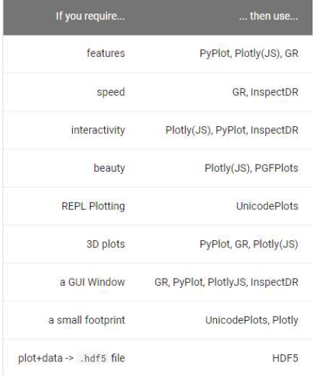
官方推荐Plots
简单绘图
xxxxxxxxxx31using Plots2y = rand(20, 1)3Plots.plot(y, linewidth=2, title="My Plot")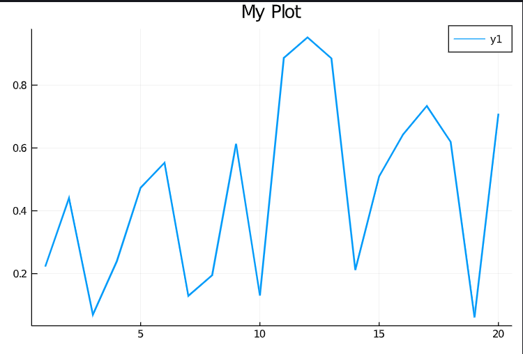
快速绘图工具GR
GR的速度比较快，一般画一些简单的图时可以选择用GR。
绘制简单的正弦曲线，加上标题，label
xxxxxxxxxx91using GR2x = 0:0.01:1003y = sin.(x)4xlim([0, 100])5ylim([-1, 1])6xlabel("time")7ylabel("sin-value")8title("sin-plot")9GR.plot(x, y)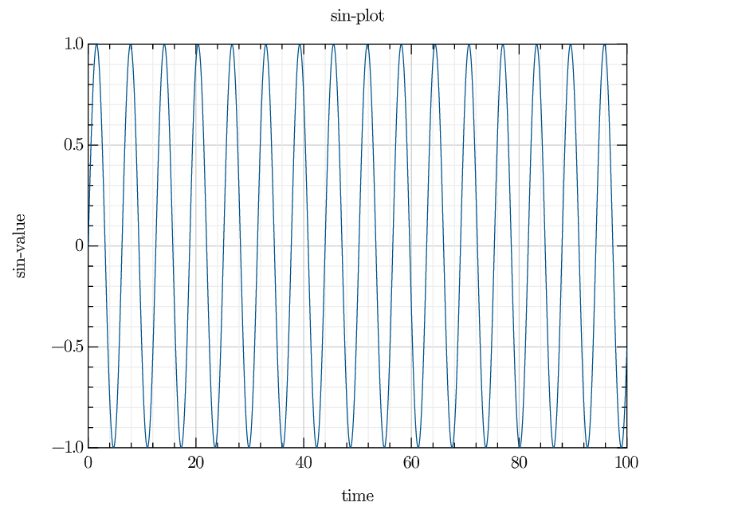
绘制四条曲线
xxxxxxxxxx121x = 0:0.1:1002y1 = sin.(x)3y2 = 2*sin.(2x)4y3 = 3*sin.(3x)5y4 = 4*sin.(4x)6xlim([0, 100])7ylim([-4.5, 4.5])8xlabel("time")9ylabel("sin-value")10title("sin-plot")11legend("sin(x)", "2sin(2x)", "3sin(3x)", "4sin(4x)")12GR.plot(x, y1, "r", x, y2, "b", x, y3, "g", x, y4, "black")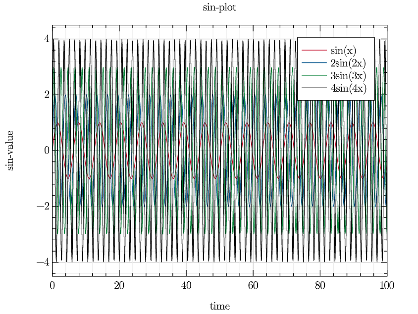
绘制bessel函数（贝塞尔函数）
xxxxxxxxxx101using SpecialFunctions2x = collect(0:0.01:20)3legend("0 order", "1 order", "2 order", "3 order")4title("Bessel function")5xlim([0, 20])6ylim([-1, 1])7GR.plot(x, SpecialFunctions.besselj.(0, x),8 x, SpecialFunctions.besselj.(1, x),9 x, SpecialFunctions.besselj.(2, x),10 x, SpecialFunctions.besselj.(4, x))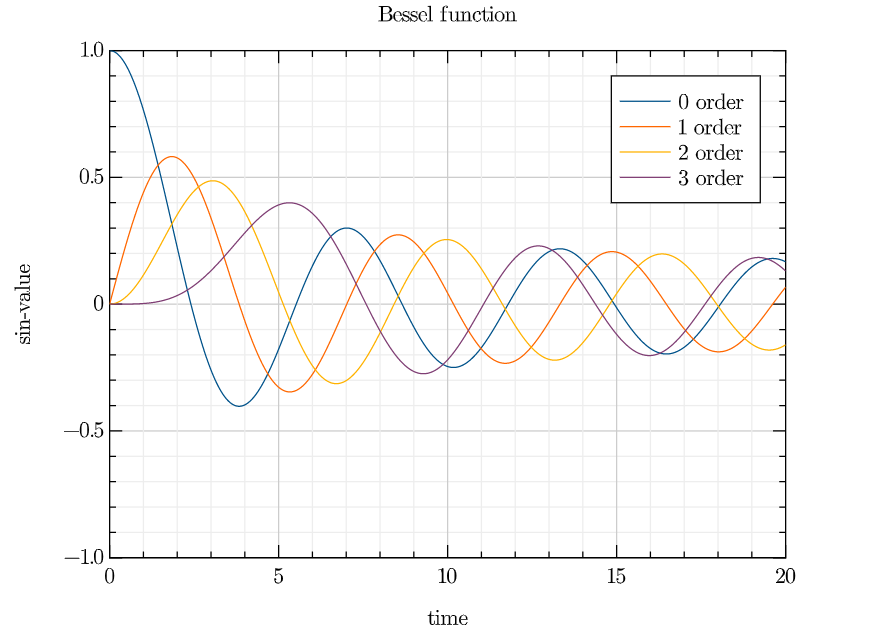
绘制散点图
xxxxxxxxxx101using GR2n = 5003x = rand(n)4y = rand(n)5xlim([0, 1])6ylim([0, 1])7title("scatter-plot")8xlabel("x")9ylabel("y")10GR.scatter(x, y)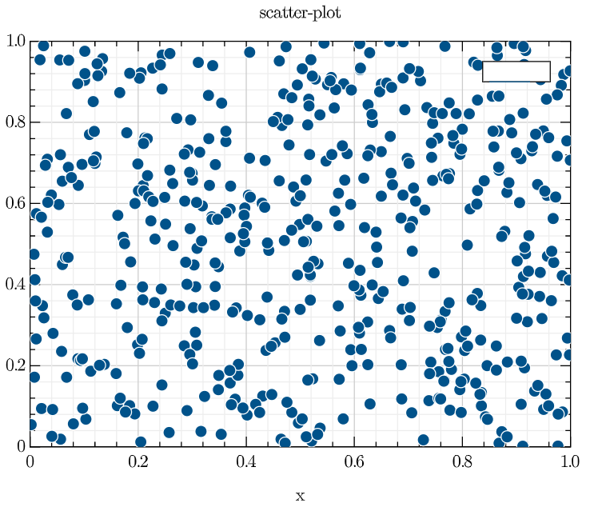
科学计算绘图工具Gadfly
xxxxxxxxxx21using Gadfly2Gadfly.plot(x = rand(10), y = rand(10))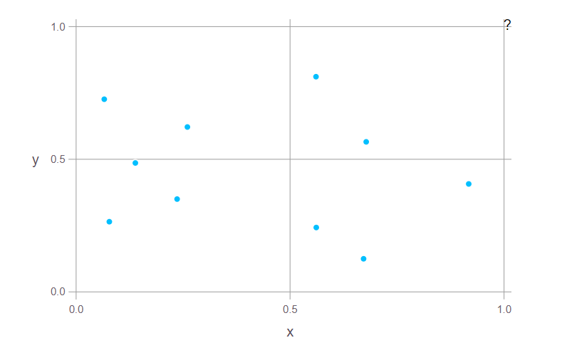
xxxxxxxxxx11Gadfly.plot(x = rand(10), y = rand(10), Geom.point, Geom.line)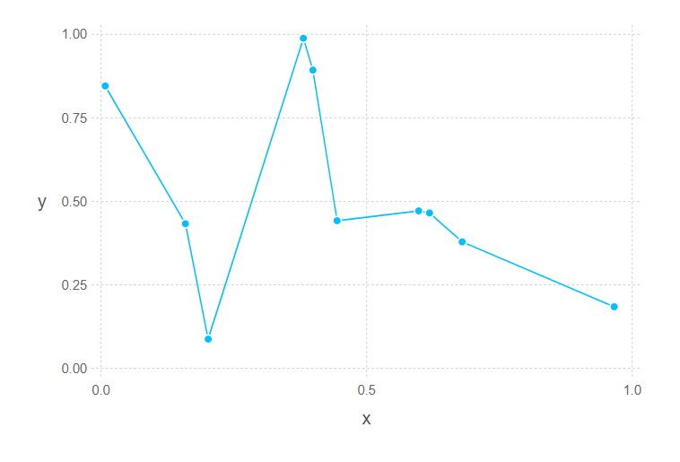
xxxxxxxxxx31Gadfly.plot(x = 1:10, y = rand(10).^2, 2Scale.y_sqrt, Geom.point, Geom.smooth,3Guide.xlabel("stimulus"), Guide.ylabel("Response"), Guide.title("Dog Training"))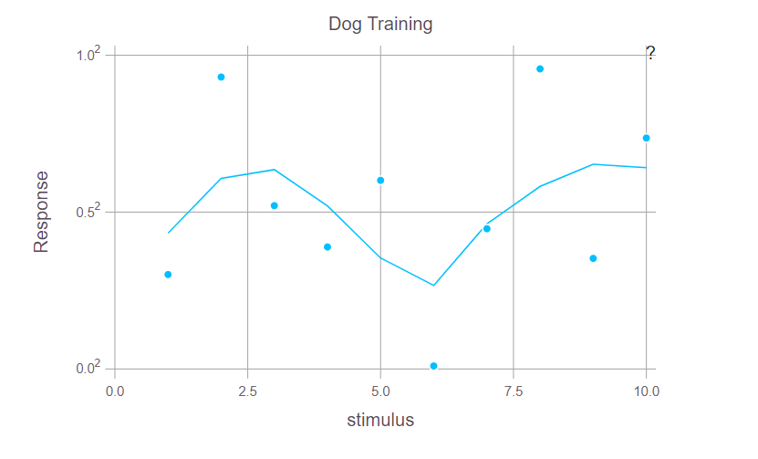
xxxxxxxxxx11Gadfly.plot([sin, cos], 0, 25)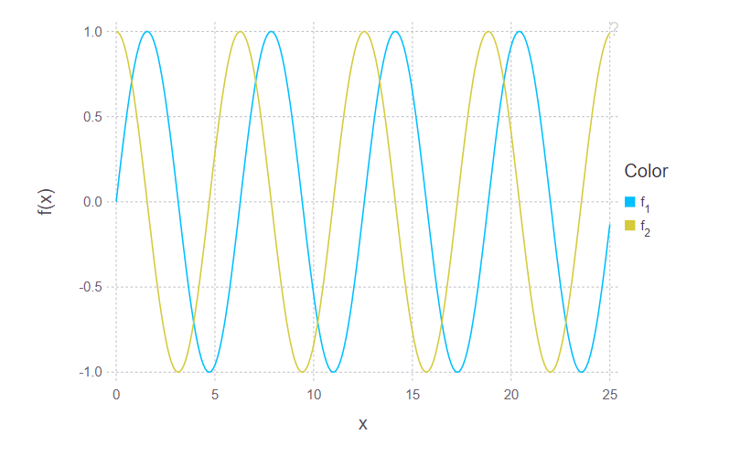
PyPlot
一维数据
xxxxxxxxxx91using PyPlot2y = rand(20)3x = 1:204PyPlot.plot(x, y, lw=2.0, linestyle="--")5PyPlot.grid(true)6PyPlot.axis("tight")7PyPlot.xlabel("index")8PyPlot.ylabel("value")9PyPlot.title("A simple plot1")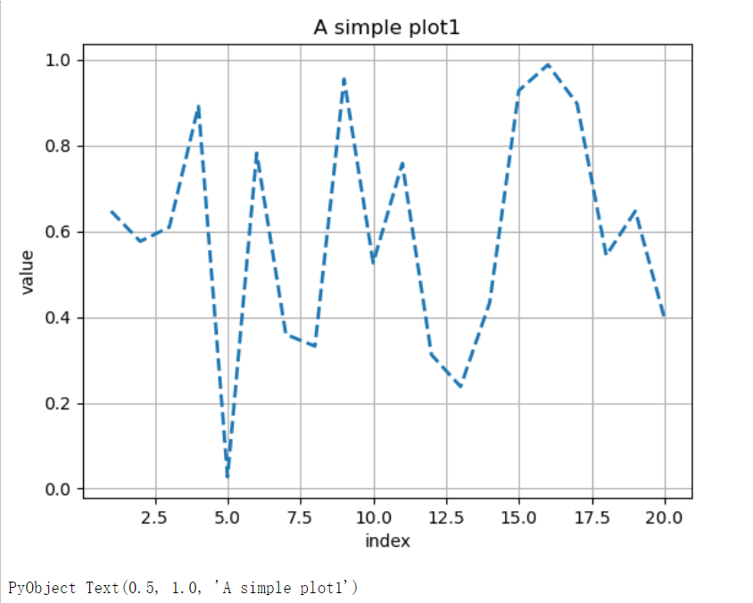
多组数据
xxxxxxxxxx101y = rand(20, 2)2x = 1:203PyPlot.plot(x, y[:,1], lw=2.0, label="1st", color="r", linestyle="--")4PyPlot.plot(x, y[:,2], lw=1.5, label="2nd", color="b", linestyle="-")5PyPlot.grid(true)6PyPlot.legend(loc=0)7PyPlot.axis("tight")8PyPlot.xlabel("index")9PyPlot.ylabel("value")10PyPlot.title("A simple plot2")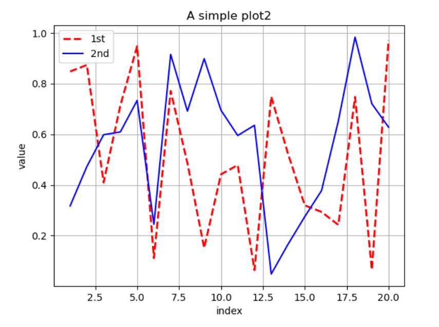
多个子图
xxxxxxxxxx161y = rand(20, 2)2x = 1:203PyPlot.subplot(211)4PyPlot.plot(x, y[:,1], lw=2.0, label="1st", color="r", linestyle="--")5PyPlot.grid(true)6PyPlot.axis("tight")7PyPlot.title("The first plot")8PyPlot.xlabel("index")9PyPlot.ylabel("value")10PyPlot.subplot(212)11PyPlot.plot(x, y[:,2], lw=1.5, label="2nd", color="b", linestyle="-")12PyPlot.grid(true)13PyPlot.axis("tight")14PyPlot.xlabel("index")15PyPlot.ylabel("value")16PyPlot.title("The second plot")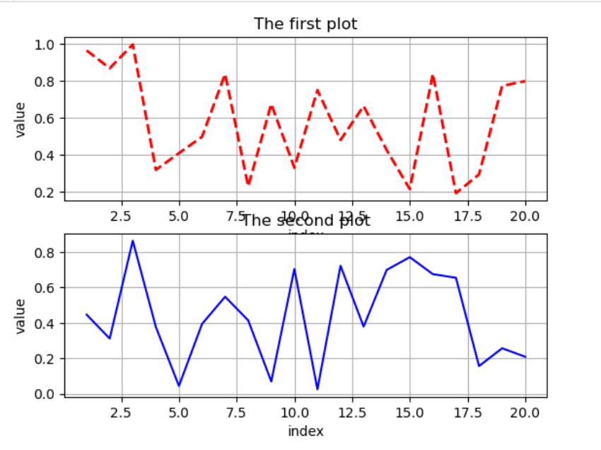
箱线图
xxxxxxxxxx51y = rand(10, 4)2PyPlot.boxplot(y)3PyPlot.xlabel("x")4PyPlot.ylabel("y")5PyPlot.title("boxplot")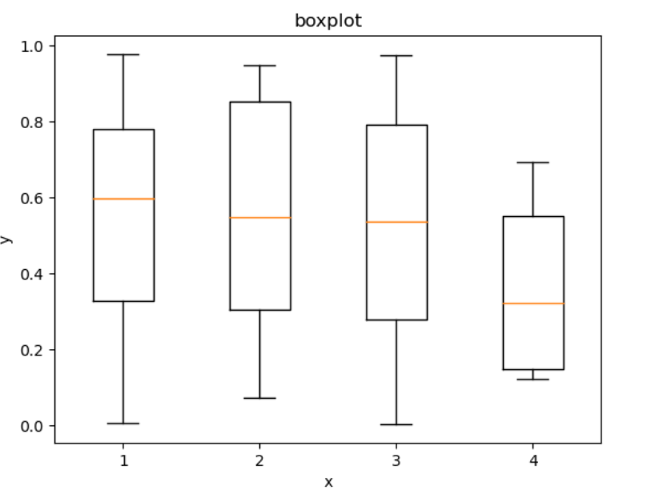
IO操作
读文件操作
xxxxxxxxxx151s1 = readlines("1.txt")2# println(s1)34s2 = open("1.txt", "r")5line = readline(s2)6println(eof(s2)) #检验文件是否到达了末尾 >>false7println(line) #刚烈女子8println(length(line))#查看字符串长度 >>4 9println(sizeof(line))#查看字符串字节数 >>1210println(position(s2))#返回字节数所在位置 >>1411println(read(s2, Char)) #向下读取一个字符 >>原12line = readline(s2)13println(line) #>>唱：锦零14println(read(s2, Int8)) #读取下一个字符的ASCII值15close(s2) #关闭文件1.txt中的内容为：
xxxxxxxxxx651刚烈女子2原唱：锦零3翻唱：大柯4mix：杀鬼5作曲 : 殇小谨6我所爱的 一笔就带过7我经历着 一生都坎坷8我藏着 心上最落寞9踉跄着想反驳10我未曾求而不得11我要高歌 是世俗误我12我求解脱 沉塘来附和13我唱着 知交在闺阁14将哀怨都描摹15泪满春衫更单薄16断肠写到第几次17又乱了几分心思18我手中笔纸19诉不尽往事20我从前也曾如赤子21天真烂漫知22婚后改姓氏 纲常作谈资23敢与朱夫子 庭院前对峙24那一种日子25最像我爱的样子26可惜每个刚烈女子27抗不过俗世28女诫告知礼教说辞29那个朝代所谓爱情都奢侈30写个故事 说给后世31我要高歌 是世俗误我32我求解脱 沉塘来附和33我唱着 知交在闺阁34将哀怨都描摹35泪满春衫更单薄36断肠写到第几次37又乱了几分心思38我手中笔纸39诉不尽往事40我从前也曾如赤子41天真烂漫知42婚后改姓氏 纲常作谈资43敢与朱夫子 庭院前对峙44那一种日子45最像我爱的样子46可惜每个刚烈女子47抗不过俗世48女诫告知礼教说辞49那个朝代所谓爱情都奢侈50写个故事 说给后世51我形容落日像最后的武士52像最后的武士53摆着个沧桑的姿势54我经历多少世事我还固执55我从前也曾如赤子56天真烂漫知57婚后改姓氏 纲常作谈资58敢与朱夫子 庭院前对峙59那一种日子60最像我爱的样子61可惜每个刚烈女子62抗不过俗世63女诫告知礼教说辞64那个朝代所谓爱情都奢侈65写个故事 说给后世
在open函数中，可以直接调用函数
xxxxxxxxxx31line = open(readline, "1.txt")2println(line)3>> 刚烈女子当然，也可以调用自定义函数：
xxxxxxxxxx41readFunc(s::IOStream) = read(s, Char)2char = open(readFunc, "1.txt")3println(char)4>> 刚还可以像Python中的with open...as的用法一样打开文件
xxxxxxxxxx51open("1.txt", "r") do stream2 for line in eachline(stream)3 println(line)4 end5end也可以将上述过程定义成函数再用open函数操作
xxxxxxxxxx71function readFunc2(stream)2 for line in eachline(stream)3 println(line)4 end5end6lines = open(readFunc2, "1.txt")7println(lines)写文件操作
xxxxxxxxxx81write("2.txt", "Hello World")2open("2.txt", "w") do f3 for ch in 'a':'z'4 write(f, ch)5 end6 write(f, '\n')7end8>>abcdefghijklmnopqrstuvwxyzopen函数的参数模式定义如下：
| Mode | Description |
|---|---|
r | read |
w | write,create,truncate |
a | write,create,append |
r+ | read,write |
w+ | read,write,create,truncate |
a+ | read,write,create,append |
xxxxxxxxxx21io = open("3.txt", "w")2write(io, "Hello Julia!")但这种读写文件的方式对矩阵操作支持不太好
xxxxxxxxxx31mat = reshape(1:9, (3, 3))2write("mat.txt", mat)3#在我的操作环境下会乱码最好用DelimitedFiles包进行矩阵的读写操作
xxxxxxxxxx71using DelimitedFiles2m = reshape(1:9, (3, 3))3writedlm("number.txt", m, '\t')4cont = readdlm("number.txt")5println(cont)6>> [1.0 4.0 7.0; 2.0 5.0 8.0; 3.0 6.0 9.0]7#读入的结果由整型变成了浮点型，如果想要读入整型，只需要readdlm("number.txt", Int8)写入结果：
xxxxxxxxxx311 4 722 5 833 6 9
除了txt格式外，Julia还可以操作csv等格式，但Julia自带的数据序列化工具JLD2速度更快，跨平台，重点推荐。
CSV文件
写csv文件与操作普通文件类似，中间加个逗号就可以了。
xxxxxxxxxx31using DelimitedFiles2data = rand(Int8, 10, 15)3writedlm("1.csv", data, )读取：
xxxxxxxxxx51using DelimitedFiles2df = readdlm("1.csv")3println(df)4>>Any["123,41,-49,111,120,-126,-59,-112,58,95,98,88,92,-111,115"; "74,82,-13,72,101,16,114,-123,23,-5,-108,63,-88,33,5"; "-81,77,-9,37,-77,-45,-115,-94,28,-11,12,101,50,100,83"; "-76,5,-107,-93,66,49,111,7,22,-59,110,72,-53,-126,46"; "95,100,5,64,4,-125,-26,-44,121,-23,-96,-83,-84,52,-46"; "-3,-88,120,-71,-116,-29,60,43,80,-38,69,-74,18,17,-35"; "107,-107,10,11,-48,-87,46,108,-74,-12,96,-107,-100,-10,82"; "-97,-17,72,100,-94,82,36,-64,22,-88,99,64,-111,-15,-62"; "-67,-109,108,91,125,124,-3,-49,-97,48,-29,20,87,64,-70"; "8,-47,126,-93,-90,42,-116,-47,-26,-44,77,-105,-72,-56,32"]5#读入的格式为字符串也可以使用CSV包中自带的函数读取
xxxxxxxxxx41using CSV2df1 = CSV.read("1.csv")3println(df1)4#读入的为dataframe格式JLD2
JLD2是JLD格式的改进，也是一种HDF5格式
写文件
xxxxxxxxxx51using JLD22stri = "Hello Julia"3fid = jldopen("jld_test.jld2", "w")4write(fid, "stri", stri)5close(fid)读文件
xxxxxxxxxx61using JLD22fid = jldopen("jld_test.jld2", "r")3res = read(fid, "stri")4println(res)5close(fid)6>>Hello JuliaIOBuffer
相当于在内存中创建一个IOStream
xxxxxxxxxx21io = IOBuffer()2write(io, "Hello World!", "JuliaLang is great!")采用take!的方式将内容从IOBuffer中读出
xxxxxxxxxx31println(String(take!(io)))2>>Hello Julia3>>Hello World!JuliaLang is great!如果在创建IOBuffer时就指定了里面的内容，则IOBuffer为只读的。
xxxxxxxxxx31io = IOBuffer("Hello World!")2write(io, "This is not writable") # error3read(io, String)关闭IOBuffer
xxxxxxxxxx11close(io)模块
模块是一些互相隔离的工作空间，用法类似于Python中导入库时，使用import * as *的方法，在Julia中，采用using或import导入要使用的模块。
我们的模块内容如下
xxxxxxxxxx201module my23export my_square, my_abs45#square function6my_square(x::Int64) = x*x78#abs function9my_abs(x) = (x>0) ? x : -x1011#add function12my_add(x,y) = x + y1314#minus function15my_minus(x, y) = x - y1617#multiply function18my_multiply(x, y) = x*y1920end在程序中直接调用时会显示找不到模块。这是因为julia中并未找到该Module的位置，我们可以手动添加进来，在程序的最开始，加上push!(LOAD_PATH,".")，"."表示当前工作目录，也可以把。换成绝对目录也可以先用cd dir的命令切換到我们的 Module的目录，再直接使用push!(LOAD_PATH,"."),这样就可以正确的调用 Mymodule了。
如果不想在程序中写出来，也可以在~/. julia/ config/ startup.jl文件中写明，该文件指明了程序运行时需要执行哪些操作在 Windows中，~指的是c: \User \Username目录；MAC的~指的是User \Username目录。
My Moduler中的export是将这两个函数导出来，这样就可以直接使用my_ square和my_abs函数，而不必非要使用Mymodule.my_ square和 My Module.my_abs调用模块的代码如下:
xxxxxxxxxx91push!(LOAD_PATH,".")2using my3using my:my_add, my_multiply4res1 = my.my_square(3)5res2 = my_square(3)6res3 = my_abs(-4)7res4 = my_add(3,4)8res5 = my.my_minus(4,3)9res6 = my_minus(4,3)#error我们还可以使用 import Mymodule语句，基本用法相同，如果申明了 export就可以不用加模块名，没声明的话要加模块名，不同的地方在于 using 用于将另一个模块带入当前模块的名称空间 . import 用于将特定类型/函数/变量从其他模块引入当前模块的名称空间 。ps:不是很明白。两种方式都可以给函数添加新的方法。
模块和文件
模块和文件并没有关系，一个模块可以有多个文件，一个文件也可以有多个模块。
一个模块多个文件
xxxxxxxxxx41module MyModu2include("file1.jl")3include("file2.jl")4end一个文件多个模块
xxxxxxxxxx71module Test12include("file1.jl")3end45module Test26include("file2.jl")7end标准模块
有三个非常重要的准模块：Main,Core和Base
Main是最顶层的模块， Julia启动后会将Main设置为当前模块。在提示符下定义的变量会进入到Main，执行varinfo()会列出Main中的变量。core包含所有语言内置的标识符（语言的核心部分，不是库），每个模块都默认声明了using Core（否则的话啥也做不）。Base模块包含了ー些基本的功能（即源码中base/目录下的内容）。所有模块都默认包含了using Base，因为对大多数库来说，都会用到。
元编程
什么是元编程
维基百科上的解释为：
元编程（英语： Metaprogramming),又译超编程，是指某类计算机程序的编写，这类计算机程序编写或者操纵其它程序（或者自身）作为它们的资料，或者在运行时完成部分本应在编译时完成的工作。多数情况下，与手工编写全部代码相比，程序员可以获得更高的工作效率，或者给程序更大的灵活度去处理新的情形而无需重新编译。
是不是没看懂？没关系，因为我刚开始也没看懂。知乎上有一个关于元编程的解释是比较直观的。
知乎原回答
Meta-这个前缀在希腊语中的本意是「在后，越过，的」,类似于拉丁语的post-,比如 metaphysics就是「在物理学之后」,这个词最开始指一些亚里士多德的著作，因为它们通常排序在《物理学》之后。但西方哲学界在几干年中渐渐斌予该词缀一种全新的意义：关于某事自身的某事。比如meta- knowledge就是「关于知识本身的知识」,meta-data就是「关于数据的数据」,meta- language就是「关于语言的语言」,而meta- programming也是由此而来，是「关于编程的编程」。弄清了词源和字面意思，可知大陆将meta-这个前缀译为「元」并不恰当。台湾译为「后设」,稍微好一点点，但仍日无法望文生义。也许「自相关」是个不错的选择，「自相关数据」、「自相关语言」、「自相关编程」但是好像又太罗嗦了。 Anyway。先看看meta-data:「我的电话是+8612345678910」一这是条数据；「+8612345678910有十三个数字和个字符，前两位是国家代码，后面是个移动电话号码」一这是关于前面那条数据的数据。 那么照猫画虎，怎样才算meta- programming呢？泛泛来说，只要是与编程相关的编程就算是meta- programming了。比如，若编程甲可以输出A-Z，那么写程序甲算「编程」;而程序乙可以生成程序甲（也许还会连带着运行它输出A-Z),那么编写程序乙的活动，就可以算作meta- programming,「元编程」。
那我们看看Julia中的元编程到底是什么及如何应用？
程序表示
每个Julia程序都是以字符串开始的
xxxxxxxxxx131julia> str1 = "1+1"2"1+1"3#将字符串解析成表达式4julia> ex1 = Meta.parse(str1)5:(1 + 1)6julia> typeof(ex1)7Expr8#我们也可以直接定义成parse的形式9julia> ex2 = :(1+1)10:(1 + 1)1112julia> typeof(ex2)13ExprExpr对象包含两个部分，一个标识表达式类型的Symbol，一个是表达式的参数
xxxxxxxxxx141julia> fieldnames(typeof(ex1))2(:head, :args)34julia> ex1.head5:call67julia> ex1.args83-element Array{Any,1}:9 :+10 111 11213julia> Meta.show_sexpr(ex1)14(:call, :+, 1, 1)所以我们可以用prefix natation来构造
xxxxxxxxxx21julia> ex3 = Expr(:call, :+, 1, 1)2:(1 + 1)当然我们也可以求出表达式的结果
xxxxxxxxxx21julia> eval(ex3)22dump函数可以显示Expr对象
xxxxxxxxxx71julia> dump(ex3)2Expr3 head: Symbol call4 args: Array{Any}((3,))5 1: Symbol +6 2: Int64 17 3: Int64 1Symbol
构造一个Symbol
xxxxxxxxxx81julia> :foo2:foo34julia> typeof(ans)5Symbol67julia> :foo == Symbol("foo")8trueSymbol中如果是多个参数，则表示将这些参数连起来
xxxxxxxxxx21julia> Symbol("foo", 123)2:foo123Quote
我们前面定义的表达式都是数值表达式，元编程也允许字符表达式
xxxxxxxxxx51julia> ex4 = :(a+b*c+1)2:(a + b * c + 1)34julia> typeof(ans)5Expr如果是多行表达式，可以在quote...end中实现
xxxxxxxxxx161julia> ex5 = quote2 x = 13 y = 24 z = 35 end6quote7 #= REPL[27]:2 =#8 x = 19 #= REPL[27]:3 =#10 y = 211 #= REPL[27]:4 =#12 z = 313end1415julia> typeof(ex5)16Expr可以使用$符号，把数值代入到符号表达式中
xxxxxxxxxx51julia> a = 12134julia> ex = :($a + b)5:(1 + b)如果是array的表达式，则要用如下形式
xxxxxxxxxx71julia> args = [:x,:y,:z]23-element Array{Symbol,1}:3 :x4 :y5 :z6julia> :(f(1,$(args...)))7:(f(1, x, y, z))嵌套Quote
xxxxxxxxxx111julia> x = :(1+2)2:(1 + 2)34julia> e = quote quote $x end end5quote6 #= REPL[45]:1 =#7 $(Expr(:quote, quote8 #= REPL[45]:1 =#9 $(Expr(:$, :x))10end))11end此时我们用eval查看此表达式结果
xxxxxxxxxx51julia> eval(e)2quote3 #= REPL[65]:1 =#4 1 + 25end也就是说，该表达式内容仍然是一个quote；那我们如何提取出最里面的内容呢？
xxxxxxxxxx141julia> e = quote quote $$x end end2quote3 #= REPL[67]:1 =#4 $(Expr(:quote, quote5 #= REPL[67]:1 =#6 $(Expr(:$, :(1 + 2)))7end))8end910julia> eval(e)11quote12 #= REPL[67]:1 =#13 314end函数中的表达式
xxxxxxxxxx71function math_expr(op, op1, op2)2 expr = Expr(:call, op, op1, op2)3 return expr4end5ex = math_expr(:+, 1, Expr(:call, :*, 4, 5))6println(ex) #:(1+4*5)7println(eval(ex)) #21xxxxxxxxxx81function make_expr2(op, opr1, opr2)2 opr1f, opr2f = map(x -> isa(x, Number) ? 2*x : x, (opr1,opr2))3 retexpr = Expr(:call, op, opr1f, opr2f)4end5ex1 = make_expr2(:+, 1, 2)6println(eval(ex1)) #67ex2 = make_expr2(:+,1,Expr(:call, :*, 5, 8))8println(eval(ex2)) #42Macros
Macro也是Julia中元编程的一个重要应用，Macro是一种规则，或称为语法替换，这种替换是在预编译时进行，Macro在运行时没有像函数似的调用时间。
xxxxxxxxxx31macro HelloWorld()2 return :(println("Hello World"))3end编译器会把所有的@HelloWorld换成:(println("Hello World"))
xxxxxxxxxx21>>Hello WorldMacro也可以带参数
xxxxxxxxxx51macro ILike(str)2 return :(println("I like ", $str))3end4("Julia")5>> I like Julia我们可以用macroexpand看到返回的quote表达式，这也是宏调试时一个非常重要的工具。
xxxxxxxxxx51ex = macroexpand(Main, :(("Julia")))2println(ex)3println(typeof(ex))4>> :(Main.println("I like ", "Julia"))5>> Expr也可以用@macroexpand查看返回的quote表达式
xxxxxxxxxx21println( "Julia")2>> :(Main.println("I like ", "Julia"))@macroexpand还有一个重要用途，我们看下面例子
xxxxxxxxxx41macro testExpend(arg)2 println("I execute at parse time. The argument is:", arg)3 return :(println("I execute at runtime. The argument is:", $arg))4end两个println函数，一个是Julai语句，一个表达式，如果我们直接运行@testExpend((1,2))
xxxxxxxxxx31((1,2,3))2>> I execute at parse time. The argument is:(1, 2, 3)3>> I execute at runtime. The argument is:(1, 2, 3)两个println语句都有输出；如果我们定义一个表达式
xxxxxxxxxx21ex = macroexpand(Main, :( (1,2,3)))2>> I execute at parse time. The argument is:(1, 2, 3)可以看出，当表达式被定义时，第一个println的内容就打印出来了
xxxxxxxxxx31eval(ex)2>> I execute at parse time. The argument is:(1, 2, 3)3>> I execute at runtime. The argument is:(1, 2, 3)而第二个println函数则在表达式被运行才执行
宏调用
前面我们也调用Macro，比如@ILike("Julia")，但宏调用的语法是很有讲究的，下面我们来具体说一下，两种常用的宏调用方式
xxxxxxxxxx21 expr1 expr2...2(expr1, expr2,...)需要注意的是：第一种用法两个参数之间是空格隔开，且参数之间没有逗号；第二种用法的name和()之间是没有空格的，且参数之间有逗号隔开。
如果写成了
xxxxxxxxxx11 (expr1, expr2, ....)则表示参数为一个tuple
当调用array时，可采用如下的方式
xxxxxxxxxx21[a b] * v2([a b]) * v注意和下面的区别，上面表示数组做[a b]参数调用宏然后乘以v，下面的表示数组[a b]先和v相乘，结果作为宏的参数：
xxxxxxxxxx11 [a b] * v对于Macro的参数，我们可以用show打印出来
xxxxxxxxxx71macro showarg(x)2 show(x)3end4(a)5(1+1)6>> :a7>> :(1+1)每个 Macro都会被传入两个额外的参数： __source__和、 __module__,他们可以指示出 location，在调试的时候很有用处。由于Julia是多重派发的， Macro也支持类似于函数样的多种方法。下面我们来看一个用 Macro调试的例子。
xxxxxxxxxx371debuggging = true23macro debug1(msg...)4 if debuggging5 :(println("DEBUG>", $(msg...)))6 else7 :nothing8 end9end1011macro debug1(lineno, msg...)12 if debuggging13 :(println("DEBUG", basename(),":",$lineno,">",$(msg...)))#basename(@__FILE__)打印出调用宏的文件名字14 else15 :nothing16 end17end1819function bubble_sort!(xs::Vector)20 println("Bubble_sort starting...")21 n = length(xs)22 swapped = true23 while swapped24 swapped = false25 for i in 1:n-126 if xs[i] > xs[i+1]27 xs[i+1], xs[i] = xs[i], xs[i+1]28 (, join(xs, " ")) #@__LINE__返回所在行号29 swapped = true30 end31 end32 end33 xs34end3536xs = Vector([1,3,4,5,8,2,7])37res = bubble_sort!(xs)运行结果为：
xxxxxxxxxx61Bubble_sort starting...2DEBUG元编程.jl:73>1 3 4 5 2 8 73DEBUG元编程.jl:73>1 3 4 5 2 7 84DEBUG元编程.jl:73>1 3 4 2 5 7 85DEBUG元编程.jl:73>1 3 2 4 5 7 86DEBUG元编程.jl:73>1 2 3 4 5 7 8常用的宏
@time：返回程序运行所需时间@show：将执行内容和结果都打印出来@which：返回在哪个地方调用的当前语句
@time
xxxxxxxxxx31 1 + 22 println("Hello world!")3 sleep(1)@time就是用下面方法实现的
xxxxxxxxxx101macro tid(expre)2 quote3 local t0 = time()4 local val = $exper5 elapsedtime = time() - t06 println("$elapsedtime seconds")7 val8 end9end10 map(x->x^2, 1:10000)@which
xxxxxxxxxx21 1 + 22 sleep(2)show
xxxxxxxxxx31x = rand(10)2 sum(x)3 cumsum(x)并行运算
协程
协程是一张轻量级的线程，通过Channel实现多个任务之间的通信。
Channel可以看作是一个管道，一端可读，一端可写。
- 不同的
task可以通过put!往同一个channel中并发地写入 - 不同的
task也可以通过take!从同一个channel并发地取数据
Channel的定义方式
xxxxxxxxxx41 Channel{T=Any}(func::Function, size=0; taskref=nothing, spawn=false)2# 从函数func中创建一个任务，其大小为size3#如果需要对创建的任务的引用，则通过关键字参数传递Ref{task}对象taskref。4#如果spawn = true，为func创建的任务可能被并行调度到另一个线程上，相当于通过thread .@spawn创建一个任务。xxxxxxxxxx71c1 = Channel(32)2c2 = Channel{Float64}(32)3put!(c1, 1)4put!(c2, 2)5println(take!(c2)) 6>> 2.07#自动将我们输入的整型转化为了浮点型关闭Channel，关闭后不能写入。
xxxxxxxxxx41julia> close(c1) 2 3julia> put!(c1,3) 4ERROR: InvalidStateException("Channel is closed.", :closed)但是可以读出，fetch只能读第一个数据，但不会把数据从Channel中删除，但take!会读出后删除。
xxxxxxxxxx51julia> fetch(c1) 21 3 4julia> take!(c1) 51 如果一个
Channel是空的，读取的take!(即执行take的task)会被阻塞直到有新的数据被准备好了。如果一个
Channel是满的，那么写入的task(即执行put!的task)会被阻塞，直到Channel有空余。isready可以用来检查一个Channel中是否有已经准备好的元素，而等待一个元素准备好则用waitxxxxxxxxxx71julia> c2 = Channel(32)2Channel{Any}(sz_max:32,sz_curr:0)34julia> isready(c2)5false67julia> wait(c2) #会堵塞直到有新数据一个
Channel一开始处于开启状态，也就是说可以被take!读取和put!写入。close会关闭一个Channel，对于一个已经关闭的Channel，put!会失败。
Channel可以在for循环中遍历。此时，循环会一直运行直到Channel中有数据，遍历过程中会取遍加入到Channel中的所有值，一旦Channel关闭或者取空了，for循环就此停止。
xxxxxxxxxx31julia> c = Channel{Int}(10) 2Channel{Int64}(sz_max:10,sz_curr:0)3julia> foreach(i->put!(c,i),1:3) #运用foreach函数将1~3写入c如果此时我们直接用for去遍历c中的内容，则在读取完后会一直等待Channel中有新的数据进来，如果用REPL运行，则会停在那里。
xxxxxxxxxx11data = [i for i in c]如果我们先把Channel关闭，再用for去遍历，则会读出Channel中的内容，因为此时c已经关闭，for不会再等待写入了。
xxxxxxxxxx21close(c)2data = [i for i in c]用Channel完成多任务之间的数据交互
新建两个Channel，一个是int型，一个是Tuple型，对于每个任务，延时一段时间后，开始执行该任务的内容，并将结果放到result中。
xxxxxxxxxx91const jobs = Channel{Int}(32) #const声明值不会变的全局变量2const results = Channel{Tuple}(32)3function do_work()4 for job_id in jobs5 exec_time = rand()6 sleep(exec_time)7 put!(results, (job_id, exec_time))8 end9end向jobs中放入数据
xxxxxxxxxx51function make_jobs(n)2 for i in 1:n3 put!(jobs, i)4 end5end写入个数据
xxxxxxxxxx21n = 122 make_jobs(n)@async表示把后面的表达式放到Task里，并加入到程序的执行列表中。
开四个任务来处理
xxxxxxxxxx31for i in 1:42 do_work()3end取出四个任务的执行结果
xxxxxxxxxx171 while n>0 #一个对表达式求值的宏，丢弃结果值，而不是返回作为浮点数执行所需的秒数。2 job_id, exec_time = take!(results)3 println("$job_id finished in $(round(exec_time, digits=2)) seconds")4 global n = n - 15end6>>3 finished in 0.2 seconds74 finished in 0.38 seconds81 finished in 0.49 seconds95 finished in 0.54 seconds102 finished in 0.75 seconds118 finished in 0.04 seconds1210 finished in 0.07 seconds137 finished in 0.5 seconds149 finished in 0.3 seconds156 finished in 0.99 seconds1611 finished in 0.61 seconds1712 finished in 0.68 seconds多线程
要用到Threads模块，Threads是Base的一个模块，程序是默认using Base的，因此Threads可以直接使用在REPL上查看当前的线程数，默认是启动一个线程。使用Threads.nthreads()来查看线程数，使用Threads.threadid()来查看当前线程id。
使用export JULIA_NUM_THREADS=4(Linux OSX)或set JULIA_NUM_THREADS=4(Windows)来设置启动4个线程。
我们查看次线程的id
xxxxxxxxxx171a = zeros(Int64,10);2#一个宏，用于并行地运行一个for循环。这会生成nthreads()线程数，在它们之间分割迭代空间，并并行迭代。在循环的末尾放置一个屏障，它等待所有线程完成执行，然后循环返回。3Threads. for i = 1:104a[i] = Threads.threadid() 5end 6julia> a 710-element Array{Int64,1}: 8 1 9 1 10 1 11 2 12 2 13 2 14 3 15 3 16 4 17 4 原子操作
所谓的原子操作是指不会被线程调度机制打断的操作；这种操作一旦开始，就一直运行到结束，中间不会有任何context switch(切换到另一个线程)。
我们先看一个使用多线程但不使用原子操作的例子。
xxxxxxxxxx81using Base.Threads #直接使用Threads中的函数2nthreads()3acc = Ref(0) #创建对0的引用，相当于创建了一指向0的指针，acc本身为一个指针，acc[]为指针指向的值4 for i in 1:1000 5 acc[]+=16end7println(acc[])8>> 264这是因为线程1对acc操作时，先取到它的数据为x，此时可能线程2也在取它的值，取到的也是x，所以两个线程分别对其加1，结果时x+1，而不是x+2，这就是线程之间没有做到同步机制。
如果使用了原子操作，则当前线程在对acc进行操作时，别的线程是不能操作的，只能等acc+1之后才能再对它进行操作。
xxxxxxxxxx61acc = Atomic{Int64}(0)2 for i in 1:10003 atomic_add!(acc,1)4end5println(acc[])6>> 1000多进程
多进程也叫多核心或者分布式处理，就是用一个CPU的多个核心或者多个CPU进行编程。
Julia中的分布式编程基于两个基本概念：远程引用（ remote references）和远程调用（ remote call),远程引用是一个对象，任意一个进程可以通过它访问存在某个特定进程上的对象。远程调用指是某个进程发起的执行函数的请求，该函数会在另一个（也可能是同一个）进程中执行。
远程引用有两种类型： Future和 Remotechannel。
一次远程调用会返回一个 Future作为结果。远程调用会立即返回；也就是说，执行远程调用的进程接下来会继续执行下 一个操作，而远程调用则会在另外的进程中进行。你可以通过对返回的 Future进行wait操作来等待远程调用结束，然后用 fetch获取结果。
对于Remotechannel而言，它可以被反复写入，例如，多个进程可以通过引用同一个远程 Channel来协调相互之间的操作。
每个进程都有一个对应的id，提供Julia交互环境的进程的id永远是1,我们把用来执行并行任务的进程称为worker。假如总共只有一个进程，那么进程1就被认为worker，否则，除了进程1以外的进程都称作 worker。
REPL上多进程使用方式，在Julia的可执行文件的路径下打开命令行，执行julia-p n，就是启动n个进程的julia。
xxxxxxxxxx111# 指定进程2来生成一个3✖4的随机矩阵2r = remotecall(rand, 2, 3, 4)3# 在进程2中计算4s = 2 1 .+ fetch(r) #@spawnat 2指在进程2中运行,fetch是把r中的数据获取到当前进程中5# 取得s6fetch(s)7>>83×4 Array{Float64,2}: 9 1.2672 1.12504 1.38571 1.8081210 1.15732 1.31485 1.8834 1.7552111 1.77022 1.64711 1.88362 1.47821也可以让Julia自行指定进程
xxxxxxxxxx31r = rand(2,2)2s = 1 .+ fetch(r)3fetch(s)要想让代码并行执行，需要对所有进程可见
xxxxxxxxxx31function f1(a,b)2 a + b3endxxxxxxxxxx21fetch( f1(2,3))2>> error这是因为f1()只对进程1可见，别的进程看不见。f1()是在进程1中定义的，因为其他进程不可见，但rand是在Base中，其他进程都可见。
为了让f1()在所有进程中都可见，可以使用@everywhere宏定义f1()
xxxxxxxxxx41julia> f2(a,b) = a + b 2 3julia> fetch( f2(2,3)) 45 科学计算
科学计算必备DataFrames
DataFrames基本操作
新建一个DataFrame并添加4列内容
xxxxxxxxxx151using DataFrames2df1 = DataFrame()3df1[!, "clo1"] = Array([1.0,2.0,3.0])4df1[!, "clo2"] = Array([4.0,5.0,6.0])5df1[!, "clo3"] = Array([7.0,8.0,9.0])6df1[!, "ID"] = Array(['a','b','c'])7show(df1)83×4 DataFrame 9│ Row │ clo1 │ clo2 │ clo3 │ ID │10│ │ Float64 │ Float64 │ Float64 │ Char │11├─────┼─────────┼─────────┼─────────┼──────┤12│ 1 │ 1.0 │ 4.0 │ 7.0 │ 'a' │13│ 2 │ 2.0 │ 5.0 │ 8.0 │ 'b' │14│ 3 │ 3.0 │ 6.0 │ 9.0 │ 'c' │15 如果没有指定列名。默认的列名为x1、x2、x3...。
xxxxxxxxxx81df2 = DataFrame([collect(1:3),collect(4:6)], ["A","B"])23×2 DataFrame 3│ Row │ A │ B │ 4│ │ Int64 │ Int64 │ 5├─────┼───────┼───────┤ 6│ 1 │ 1 │ 4 │ 7│ 2 │ 2 │ 5 │ 8│ 3 │ 3 │ 6 │ DataFrame合并
xxxxxxxxxx141df2 = DataFrame() 2df2[!, "clo11"] = Array([11.0, 12.0, 13.0])3df2[!, "col12"] = Array([14.0, 15.0, 16.0])4df2[!, "col13"] = Array([17.0, 18.0, 19.0])5df2[!, "ID"] = Array(['a', 'b', 'c'])67join(df1, df2, on="ID")83×7 DataFrame 9│ Row │ clo1 │ clo2 │ clo3 │ ID │ clo11 │ col12 │ col13 │10│ │ Float64 │ Float64 │ Float64 │ Char │ Float64 │ Float64 │ Float64 │11├─────┼─────────┼─────────┼─────────┼──────┼─────────┼─────────┼─────────┤12│ 1 │ 1.0 │ 4.0 │ 7.0 │ 'a' │ 11.0 │ 14.0 │ 17.0 │13│ 2 │ 2.0 │ 5.0 │ 8.0 │ 'b' │ 12.0 │ 15.0 │ 18.0 │14│ 3 │ 3.0 │ 6.0 │ 9.0 │ 'c' │ 13.0 │ 16.0 │ 19.0 │改变列名
xxxxxxxxxx91julia> rename(df1, :clo1 => :cloo1) 23×4 DataFrame 3│ Row │ cloo1 │ clo2 │ clo3 │ ID │4│ │ Float64 │ Float64 │ Float64 │ Char │5├─────┼─────────┼─────────┼─────────┼──────┤6│ 1 │ 1.0 │ 4.0 │ 7.0 │ 'a' │7│ 2 │ 2.0 │ 5.0 │ 8.0 │ 'b' │8│ 3 │ 3.0 │ 6.0 │ 9.0 │ 'c' │9 索引
xxxxxxxxxx1011df = DataFrame(rand(5,6))2# 索引第2至4列3 df[:,2:4]45×3 DataFrame 5│ Row │ x2 │ x3 │ x4 │ 6│ │ Float64 │ Float64 │ Float64 │ 7├─────┼──────────┼───────────┼──────────┤ 8│ 1 │ 0.131967 │ 0.550392 │ 0.371581 │ 9│ 2 │ 0.154318 │ 0.0976529 │ 0.297676 │ 10│ 3 │ 0.791917 │ 0.0435666 │ 0.258258 │ 11│ 4 │ 0.798479 │ 0.358984 │ 0.175848 │ 12│ 5 │ 0.978465 │ 0.695321 │ 0.687738 │ 1314#索引第2到4行153×6 DataFrame 16│ Row │ x1 │ x2 │ x3 │ x4 │ x5 │ x6 │ 17│ │ Float64 │ Float64 │ Float64 │ Float64 │ Float64 │ Float64 │ 18├─────┼──────────┼──────────┼───────────┼──────────┼──────────┼──────────┤ 19│ 1 │ 0.845814 │ 0.154318 │ 0.0976529 │ 0.297676 │ 0.393848 │ 0.735145 │ 20│ 2 │ 0.858742 │ 0.791917 │ 0.0435666 │ 0.258258 │ 0.892454 │ 0.90762 │ 21│ 3 │ 0.17023 │ 0.798479 │ 0.358984 │ 0.175848 │ 0.932429 │ 0.460362 │ 22 # 行和列一起索引23df[2:4,["x1","x2"]]243×2 DataFrame 25│ Row │ x1 │ x2 │ 26│ │ Float64 │ Float64 │ 27├─────┼──────────┼──────────┤ 28│ 1 │ 0.845814 │ 0.154318 │ 29│ 2 │ 0.858742 │ 0.791917 │ 30│ 3 │ 0.17023 │ 0.798479 │ 3132df.x1335-element Array{Float64,1}:34 0.142584726241243235 0.845814003278542236 0.858742178279001937 0.170229848538286738 0.50776537771570613940for row in eachrow(df) 41 println(row) 42end 43DataFrameRow 44│ Row │ x1 │ x2 │ x3 │ x4 │ x5 │ x6 │ 45│ │ Float64 │ Float64 │ Float64 │ Float64 │ Float64 │ Float64 │ 46├─────┼──────────┼──────────┼──────────┼──────────┼───────────┼──────────┤ 47│ 1 │ 0.142585 │ 0.131967 │ 0.550392 │ 0.371581 │ 0.0530827 │ 0.520608 │ 48DataFrameRow 49│ Row │ x1 │ x2 │ x3 │ x4 │ x5 │ x6 │ 50│ │ Float64 │ Float64 │ Float64 │ Float64 │ Float64 │ Float64 │ 51├─────┼──────────┼──────────┼───────────┼──────────┼──────────┼──────────┤ 52│ 2 │ 0.845814 │ 0.154318 │ 0.0976529 │ 0.297676 │ 0.393848 │ 0.735145 │ 53DataFrameRow 54│ Row │ x1 │ x2 │ x3 │ x4 │ x5 │ x6 │ 55│ │ Float64 │ Float64 │ Float64 │ Float64 │ Float64 │ Float64 │ 56├─────┼──────────┼──────────┼───────────┼──────────┼──────────┼─────────┤ 57│ 3 │ 0.858742 │ 0.791917 │ 0.0435666 │ 0.258258 │ 0.892454 │ 0.90762 │ 58DataFrameRow 59│ Row │ x1 │ x2 │ x3 │ x4 │ x5 │ x6 │ 60│ │ Float64 │ Float64 │ Float64 │ Float64 │ Float64 │ Float64 │ 61├─────┼─────────┼──────────┼──────────┼──────────┼──────────┼──────────┤ 62│ 4 │ 0.17023 │ 0.798479 │ 0.358984 │ 0.175848 │ 0.932429 │ 0.460362 │ 63DataFrameRow 64│ Row │ x1 │ x2 │ x3 │ x4 │ x5 │ x6 │ 65│ │ Float64 │ Float64 │ Float64 │ Float64 │ Float64 │ Float64 │ 66├─────┼──────────┼──────────┼──────────┼──────────┼──────────┼──────────┤ 67│ 5 │ 0.507765 │ 0.978465 │ 0.695321 │ 0.687738 │ 0.791768 │ 0.682846 │ 68 describe(df)696×8 DataFrame 70│ Row │ variable │ mean │ min │ median │ max │ nunique │ nmissing │ eltype │ 71│ │ Symbol │ Float64 │ Float64 │ Float64 │ Float64 │ Nothing │ Nothing │ DataType │ 72├─────┼──────────┼──────────┼───────────┼──────────┼──────────┼─────────┼──────────┼──────────┤ 73│ 1 │ x1 │ 0.505027 │ 0.142585 │ 0.507765 │ 0.858742 │ │ │ Float64 │ 74│ 2 │ x2 │ 0.571029 │ 0.131967 │ 0.791917 │ 0.978465 │ │ │ Float64 │ 75│ 3 │ x3 │ 0.349183 │ 0.0435666 │ 0.358984 │ 0.695321 │ │ │ Float64 │ 76│ 4 │ x4 │ 0.35822 │ 0.175848 │ 0.297676 │ 0.687738 │ │ │ Float64 │ 77│ 5 │ x5 │ 0.612716 │ 0.0530827 │ 0.791768 │ 0.932429 │ │ │ Float64 │ 78│ 6 │ x6 │ 0.661316 │ 0.460362 │ 0.682846 │ 0.90762 │ │ │ Float64 │ 7980sort!(df, :x3)815×6 DataFrame 82│ Row │ x1 │ x2 │ x3 │ x4 │ x5 │ x6 │83│ │ Float64 │ Float64 │ Float64 │ Float64 │ Float64 │ Float64 │84├─────┼──────────┼──────────┼───────────┼──────────┼───────────┼──────────┤85│ 1 │ 0.858742 │ 0.791917 │ 0.0435666 │ 0.258258 │ 0.892454 │ 0.90762 │86│ 2 │ 0.845814 │ 0.154318 │ 0.0976529 │ 0.297676 │ 0.393848 │ 0.735145 │87│ 3 │ 0.17023 │ 0.798479 │ 0.358984 │ 0.175848 │ 0.932429 │ 0.460362 │88│ 4 │ 0.142585 │ 0.131967 │ 0.550392 │ 0.371581 │ 0.0530827 │ 0.520608 │89│ 5 │ 0.507765 │ 0.978465 │ 0.695321 │ 0.687738 │ 0.791768 │ 0.682846 │90sort!(df, :x3, rev=true)915×6 DataFrame 92│ Row │ x1 │ x2 │ x3 │ x4 │ x5 │ x6 │93│ │ Float64 │ Float64 │ Float64 │ Float64 │ Float64 │ Float64 │94├─────┼──────────┼──────────┼───────────┼──────────┼───────────┼──────────┤95│ 1 │ 0.507765 │ 0.978465 │ 0.695321 │ 0.687738 │ 0.791768 │ 0.682846 │96│ 2 │ 0.142585 │ 0.131967 │ 0.550392 │ 0.371581 │ 0.0530827 │ 0.520608 │97│ 3 │ 0.17023 │ 0.798479 │ 0.358984 │ 0.175848 │ 0.932429 │ 0.460362 │98│ 4 │ 0.845814 │ 0.154318 │ 0.0976529 │ 0.297676 │ 0.393848 │ 0.735145 │99│ 5 │ 0.858742 │ 0.791917 │ 0.0435666 │ 0.258258 │ 0.892454 │ 0.90762 │100 101使用CSV模块读写数据框
xxxxxxxxxx41using CSV2df = DataFrame(rand(5,6))3CSV.write("df123.csv",df)4CSV.read("df123.csv")宏操作
xxxxxxxxxx401using DataFramesMeta2 (df, :x1 .> 0.4) #找出符合的元素33×6 DataFrame 4│ Row │ x1 │ x2 │ x3 │ x4 │ x5 │ x6 │ 5│ │ Float64 │ Float64 │ Float64 │ Float64 │ Float64 │ Float64 │ 6├─────┼──────────┼──────────┼───────────┼──────────┼──────────┼──────────┤ 7│ 1 │ 0.507765 │ 0.978465 │ 0.695321 │ 0.687738 │ 0.791768 │ 0.682846 │ 8│ 2 │ 0.845814 │ 0.154318 │ 0.0976529 │ 0.297676 │ 0.393848 │ 0.735145 │ 9│ 3 │ 0.858742 │ 0.791917 │ 0.0435666 │ 0.258258 │ 0.892454 │ 0.90762 │ 1011(df, :x2 .+ 1) #对某些元素进行操作125-element Array{Float64,1}:13 1.978464526214522414 1.131966656745644315 1.798478997855588816 1.154318156031523717 1.79191679606608781819(df, :x3) #选择某些元素205×1 DataFrame 21│ Row │ x3 │ 22│ │ Float64 │ 23├─────┼───────────┤ 24│ 1 │ 0.695321 │ 25│ 2 │ 0.550392 │ 26│ 3 │ 0.358984 │ 27│ 4 │ 0.0976529 │ 28│ 5 │ 0.0435666 │ 29 30 (df, p = 2 * :x1, :x2)315×2 DataFrame 32│ Row │ p │ x2 │33│ │ Float64 │ Float64 │34├─────┼──────────┼──────────┤35│ 1 │ 1.01553 │ 0.978465 │36│ 2 │ 0.285169 │ 0.131967 │37│ 3 │ 0.34046 │ 0.798479 │38│ 4 │ 1.69163 │ 0.154318 │39│ 5 │ 1.71748 │ 0.791917 │40 RDataSets和Gadfly
RDatasets是Julia中的一个数据集，里面包含了很多可以学习和验证的数据，其中就包括iris数据集。
xxxxxxxxxx361using RDatasets2iris = dataset("datasets", "iris")3150×5 DataFrame 4│ Row │ SepalLength │ SepalWidth │ PetalLength │ PetalWidth │ Species │ 5│ │ Float64 │ Float64 │ Float64 │ Float64 │ Cat… │ 6├─────┼─────────────┼────────────┼─────────────┼────────────┼───────────┤ 7│ 1 │ 5.1 │ 3.5 │ 1.4 │ 0.2 │ setosa │ 8│ 2 │ 4.9 │ 3.0 │ 1.4 │ 0.2 │ setosa │ 9│ 3 │ 4.7 │ 3.2 │ 1.3 │ 0.2 │ setosa │ 10│ 4 │ 4.6 │ 3.1 │ 1.5 │ 0.2 │ setosa │ 11│ 5 │ 5.0 │ 3.6 │ 1.4 │ 0.2 │ setosa │ 12│ 6 │ 5.4 │ 3.9 │ 1.7 │ 0.4 │ setosa │ 13│ 7 │ 4.6 │ 3.4 │ 1.4 │ 0.3 │ setosa │ 14│ 8 │ 5.0 │ 3.4 │ 1.5 │ 0.2 │ setosa │ 15│ 9 │ 4.4 │ 2.9 │ 1.4 │ 0.2 │ setosa │ 16│ 10 │ 4.9 │ 3.1 │ 1.5 │ 0.1 │ setosa │ 17⋮ 18│ 140 │ 6.9 │ 3.1 │ 5.4 │ 2.1 │ virginica │ 19│ 141 │ 6.7 │ 3.1 │ 5.6 │ 2.4 │ virginica │ 20│ 142 │ 6.9 │ 3.1 │ 5.1 │ 2.3 │ virginica │ 21│ 143 │ 5.8 │ 2.7 │ 5.1 │ 1.9 │ virginica │ 22│ 144 │ 6.8 │ 3.2 │ 5.9 │ 2.3 │ virginica │ 23│ 145 │ 6.7 │ 3.3 │ 5.7 │ 2.5 │ virginica │ 24│ 146 │ 6.7 │ 3.0 │ 5.2 │ 2.3 │ virginica │ 25│ 147 │ 6.3 │ 2.5 │ 5.0 │ 1.9 │ virginica │ 26│ 148 │ 6.5 │ 3.0 │ 5.2 │ 2.0 │ virginica │ 27│ 149 │ 6.2 │ 3.4 │ 5.4 │ 2.3 │ virginica │ 28│ 150 │ 5.9 │ 3.0 │ 5.1 │ 1.8 │ virginica │ 29 features = convert(Array, iris[:, 1:4])30labels = convert(Array, iris[:, 5])3132using Gadfly33p = plot(iris, x = :SepalLength, y = :SepalWidth, Geom.point)34# 保存图像35img = SVG("iris_plot1.SVG", 10cm, 8cm)36draw(img, p)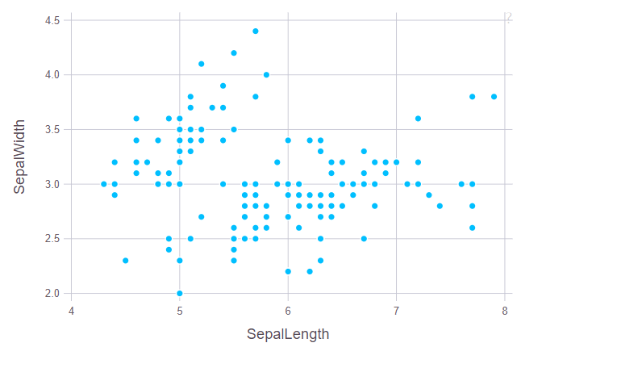
用颜色区分种类：
xxxxxxxxxx11p = plot(iris, x = :SepalLength, y = :SepalWidth, Geom.point, color=:Species)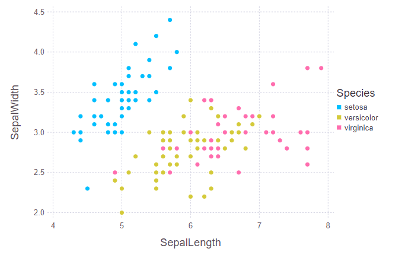
给每个点添加标签
xxxxxxxxxx11p = plot(iris, x = :SepalLength, y = :SepalWidth,label = :Species ,color=:Species, Geom.point, Geom.label)
绘制子图
xxxxxxxxxx31figla = plot(iris, x = "SepalLength", y = "SepalWidth", Geom.point);2figlb = plot(iris, x = "SepalWidth", Geom.bar);3figlb = hstack(figla, figlb)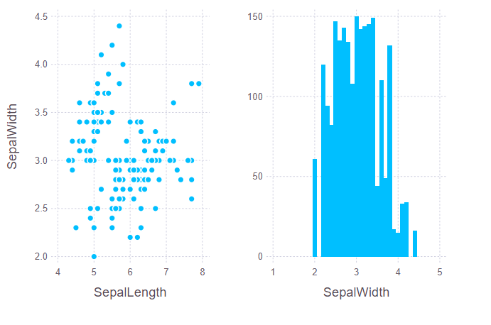
概率分布
xxxxxxxxxx11using Distributions生成均值为，标准差为的正态分布
xxxxxxxxxx51n1 = Normal(20, 2.0);2params(n1) #查看n1的参数3>> (20.0, 2.0)4fieldnames(typeof(n1)) #查看n1类型的参数5>> (:μ, :σ)Normal的类型是UnionAll
xxxxxxxxxx21typeof(Normal)2>> UnionAll生成满足模型的随机数
xxxxxxxxxx11rand(n1,100)二项分布
xxxxxxxxxx31b = Binomial(20, 0.8)2>> Binomial{Float64}(n=20, p=0.8)3rand(b, 100)概率密度
xxxxxxxxxx31n = Normal();2pdf(n, 0.4) #标准正态分布在0.4处的概率密度值3>> 0.36827014030332333分布函数
xxxxxxxxxx21cdf(n, 0.4) #标准正态分布在0.4处的分布函数值2>> 0.6554217416103242分位数
xxxxxxxxxx51quantile.(n, [0.25, 0.5, 0.95]) #标准正态分布的分位数2>> 3-element Array{Float64,1}: 3 -0.6744897501960818 4 0.0 5 1.6448536269514717 对于随机数rand(10)，按Normal分布分析它的参数值
xxxxxxxxxx21fit(Normal, rand(10))2>> Normal{Float64}(μ=0.512198197172256, σ=0.29727769329576403)StatsBase库：里面也包含了统计学的常用函数
xxxxxxxxxx11using StatsBasexxxxxxxxxx41a = collect(1:6);2b = collect(4:9);3countne(a,b) #按序列对比a和b中不一样的数据个数4>> 6xxxxxxxxxx31a = [1,2,3,4,5]2b = [4,1,3,2,5]3counteq(a,b) #a,b对应位置相同的数据个数xxxxxxxxxx21L1dist(a,b) #abs(a[1]-b[1]) + ... + abs(a[n]-b[n])2L2dist(a,b) #sqrt((a[1]-b[1])^2 + ... + (a[n]-b[n])^2)xxxxxxxxxx11meanad(a,b) #L1dist(a,b)/nxxxxxxxxxx21sample(a) #从a中采样一次数据2sample(a,3)#从a中取样3次数据，返回Arrayxxxxxxxxxx81a1 = [1, 10, 20, 30];2a2 = [100, 200, 300];3sample!(a1,a2)43-element Array{Int64,1}:5 306 107 108#从a1中抽取length(a2)个数据（有放回），数据类型与a2相同xxxxxxxxxx61a2 = [100.0, 200.0, 300.0];2sample!(a1,a2)33-element Array{Float64,1}:4 30.0 5 10.0 6 20.0 其他常用函数
xxxxxxxxxx81x = [1.0, 2.0, 3.0, 4.0];2autocov(x)3autocov(x, [2,3])4autocor(x)5autocor(x, [2,3])6y = [3.0, 4.0, 5.0, 6.0]7crosscov(x, y)8crosscov(x, y, [2,3])
时间序列
xxxxxxxxxx11using TimeSeriesxxxxxxxxxx131date = collect(Date(2018,1,1):Day(1):Date(2018,12,31))2date[1:10]310-element Array{Date,1}:4 2018-01-015 2018-01-026 2018-01-037 2018-01-048 2018-01-059 2018-01-0610 2018-01-0711 2018-01-0812 2018-01-0913 2018-01-10TimeArray
xxxxxxxxxx281 ta = TimeArray(date, rand(length(date),2))2365×2 TimeArray{Float64,2,Date,Array{Float64,2}} 2018-01-01 to 2018-12-313│ │ A │ B │4├────────────┼────────┼────────┤5│ 2018-01-01 │ 0.6689 │ 0.1202 │6│ 2018-01-02 │ 0.5996 │ 0.5531 │7│ 2018-01-03 │ 0.5734 │ 0.0708 │8│ 2018-01-04 │ 0.1313 │ 0.8755 │9│ 2018-01-05 │ 0.7922 │ 0.9192 │10│ 2018-01-06 │ 0.0437 │ 0.291 │11│ 2018-01-07 │ 0.2766 │ 0.7561 │12│ 2018-01-08 │ 0.5578 │ 0.1761 │13│ 2018-01-09 │ 0.678 │ 0.7213 │14│ 2018-01-10 │ 0.2261 │ 0.5037 │15│ 2018-01-11 │ 0.5553 │ 0.9619 │16│ 2018-01-12 │ 0.1517 │ 0.7192 │17 ⋮18│ 2018-12-21 │ 0.8126 │ 0.6199 │19│ 2018-12-22 │ 0.19 │ 0.0961 │20│ 2018-12-23 │ 0.6185 │ 0.9283 │21│ 2018-12-24 │ 0.6417 │ 0.4088 │22│ 2018-12-25 │ 0.1897 │ 0.7804 │23│ 2018-12-26 │ 0.8801 │ 0.5731 │24│ 2018-12-27 │ 0.2213 │ 0.9441 │25│ 2018-12-28 │ 0.6519 │ 0.1873 │26│ 2018-12-29 │ 0.0854 │ 0.0057 │27│ 2018-12-30 │ 0.5102 │ 0.6309 │28│ 2018-12-31 │ 0.8945 │ 0.6664 │xxxxxxxxxx621 timestamp(ta::TimeArray) #取出时间2365-element Array{Date,1}: 3 2018-01-01 4 2018-01-02 5 2018-01-03 6 2018-01-04 7 2018-01-05 8 2018-01-06 9 2018-01-07 10 2018-01-08 11 2018-01-09 12 2018-01-10 13 2018-01-11 14 2018-01-12 15 2018-01-13 16 ⋮ 17 2018-12-20 18 2018-12-21 19 2018-12-22 20 2018-12-23 21 2018-12-24 22 2018-12-25 23 2018-12-26 24 2018-12-27 25 2018-12-28 26 2018-12-29 27 2018-12-30 28 2018-12-31 2930values(ta::TimeArray) #取出值31365×2 Array{Float64,2}: 32 0.668887 0.120241 33 0.599617 0.553089 34 0.573368 0.070834 35 0.131338 0.875542 36 0.79221 0.919241 37 0.0436837 0.291022 38 0.276555 0.756147 39 0.557788 0.176079 40 0.678009 0.721344 41 0.226109 0.503747 42 0.555307 0.961935 43 0.151684 0.719197 44 0.84211 0.602309 45 ⋮ 46 0.920065 0.659223 47 0.812629 0.619926 48 0.189965 0.0960546 49 0.618545 0.928288 50 0.641728 0.408813 51 0.189693 0.780418 52 0.880083 0.573097 53 0.221286 0.944118 54 0.651867 0.187301 55 0.0854492 0.00570113 56 0.510181 0.630856 57 0.894524 0.666362 5859colnames(ta::TimeArray) #取出列名602-element Array{Symbol,1}: 61 :A 62 :B 机器学习
ML Base
xxxxxxxxxx11using MLBase机器学习基础库，不包含任何机器学习的算法，但为机器学习提供很多必要的工具。
先来看下MLBase中几个简单数据处理的函数
xxxxxxxxxx241repeach(1:3,2) #重复数据26-element Array{Int64,1}: 3 1 4 1 5 2 6 2 7 3 8 3 9repeach(["a", "b", "c"], 2)106-element Array{String,1}: 11 "a" 12 "a" 13 "b" 14 "b" 15 "c" 16 "c" 17repeach(["a", "b", "c"], [1,2,3])186-element Array{String,1}:19 "a"20 "b"21 "b"22 "c"23 "c"24 "c"xxxxxxxxxx161julia> A = reshape(collect(1:6), 2, 3) 22×3 Array{Int64,2}: 3 1 3 5 4 2 4 6 5 6julia> repeachcol(A,2) 72×6 Array{Int64,2}: 8 1 1 3 3 5 5 9 2 2 4 4 6 6 10 11julia> repeachrow(A,2) 124×3 Array{Int64,2}: 13 1 3 5 14 1 3 5 15 2 4 6 16 2 4 6 xxxxxxxxxx111julia> labels = labelmap(['a', 'b', 'b', 'c', 'c', 'c']) #创建labelmap,会去除重复的2LabelMap (with 3 labels): 3[1] a 4[2] b 5[3] c 6julia> labelencode(labels, ['b','c','c','a'])#对标签进行编码74-element Array{Int64,1}:8 29 310 311 1决策树
使用iris数据集
xxxxxxxxxx41using RDatasets2iris = dataset("datasets", "iris")3features = convert(Array, iris[:,1:4])4labels = convert(Array, iris[:,5])调用决策树
xxxxxxxxxx11using DecisionTree在该库中，包括了
- Decision Tree Classifier
- Random Forest Classifier
- Adaptive-Boosted Decision Stumps Classifier
- Regression Tree
- Regression Random Forest
我们这里只介绍分类模型，即前三种模型
xxxxxxxxxx431model = build_tree(labels, features) #构建树2Decision Tree3Leaves: 94Depth: 55model = prune_tree(model, 0.9)#按照0.9的比例修剪树6Decision Tree7Leaves: 88Depth: 59# 打印模型10print_tree(model)11Feature 4, Threshold 0.8 12L-> setosa : 50/50 13R-> Feature 4, Threshold 1.75 14 L-> Feature 3, Threshold 4.95 15 L-> Feature 4, Threshold 1.65 16 L-> versicolor : 47/47 17 R-> virginica : 1/1 18 R-> Feature 4, Threshold 1.55 19 L-> virginica : 3/3 20 R-> Feature 1, Threshold 6.95 21 L-> versicolor : 2/2 22 R-> virginica : 1/1 23 R-> Feature 3, Threshold 4.85 24 L-> Feature 1, Threshold 5.95 25 L-> versicolor : 1/1 26 R-> virginica : 2/2 27 R-> virginica : 43/43 2829print_tree(model,3)30Feature 4, Threshold 0.8 31L-> setosa : 50/50 32R-> Feature 4, Threshold 1.75 33 L-> Feature 3, Threshold 4.95 34 L-> 35 R-> 36 R-> Feature 3, Threshold 4.85 37 L-> 38 R-> virginica : 43/43 3940# 利用模型做预测41apply_tree(model, [1.9,2.0,2.1,1.9])42>> "versicolor"43交叉验证
xxxxxxxxxx381n_folds = 32accuracy = nfoldCV_tree(labels, features, n_folds, 0.9)3# 分成3组进行交叉验证，按照0.9剪切树4Fold 1 5Classes: ["setosa", "versicolor", "virginica"] 6Matrix: 3×3 Array{Int64,2}: 7 17 0 0 8 0 12 1 9 0 1 19 10 11Accuracy: 0.96 12Kappa: 0.9390986601705237 13 14Fold 2 15Classes: ["setosa", "versicolor", "virginica"] 16Matrix: 3×3 Array{Int64,2}: 17 18 0 0 18 0 17 1 19 0 1 13 20 21Accuracy: 0.96 22Kappa: 0.9396135265700483 23 24Fold 3 25Classes: ["setosa", "versicolor", "virginica"] 26Matrix: 3×3 Array{Int64,2}: 27 15 0 0 28 0 18 1 29 0 1 15 30 31Accuracy: 0.96 32Kappa: 0.9396863691194209 33 34Mean Accuracy: 0.96 353-element Array{Float64,1}: 36 0.96 37 0.96 38 0.96 adaptive boosting模型
构造adaptive boosting模型
xxxxxxxxxx461 modell, coeffs = build_adaboost_stumps(labels, features,10) #10指树的数量2(Ensemble of Decision Trees 3Trees: 10 4Avg Leaves: 2.0 5Avg Depth: 1.0, [0.3465735902799726, 0.25541281188299536, 0.2645768713851454, 0.3357494610262844, 0.28884625587396767, 0.2582865965088567, 0.35688249756171214, 0.29876564303107633, 0.24248457726633457, 0.3499761902694112]) 67 apply_adaboost_stumps(modell, coeffs,[1.9,2.0,2.1,1.9])8>> "virginica"910# 进行交叉验证，3组，迭代8次11accuracy = nfoldCV_stumps(labels, features, 3,8)12Fold 1 13Classes: ["setosa", "versicolor", "virginica"] 14Matrix: 3×3 Array{Int64,2}: 15 19 0 0 16 0 17 0 17 0 2 12 18 19Accuracy: 0.96 20Kappa: 0.9393203883495145 21 22Fold 2 23Classes: ["setosa", "versicolor", "virginica"] 24Matrix: 3×3 Array{Int64,2}: 25 9 0 0 26 0 19 3 27 0 1 18 28 29Accuracy: 0.92 30Kappa: 0.8734177215189874 31 32Fold 3 33Classes: ["setosa", "versicolor", "virginica"] 34Matrix: 3×3 Array{Int64,2}: 35 22 0 0 36 0 10 1 37 0 0 17 38 39Accuracy: 0.98 40Kappa: 0.96875 41 42Mean Accuracy: 0.9533333333333333 433-element Array{Float64,1}: 44 0.96 45 0.92 46 0.98 随机森林
构建随机森林模型
xxxxxxxxxx61# 2表示2个随机特征，10个树，0.5的样本2model = build_forest(labels, features, 2, 10, 0.5)3Ensemble of Decision Trees4Trees: 10 5Avg Leaves: 7.6 6Avg Depth: 4.9 应用模型判断
xxxxxxxxxx21apply_forest(model, [5.9,3.0,5.1,1.9])2>> "virginica"交叉验证
xxxxxxxxxx361accuracy = nfoldCV_forest(labels, features, 3, 2)2Fold 1 3Classes: ["setosa", "versicolor", "virginica"] 4Matrix: 3×3 Array{Int64,2}: 5 16 0 0 6 0 15 2 7 0 0 17 8 9Accuracy: 0.96 10Kappa: 0.9399759903961584 11 12Fold 2 13Classes: ["setosa", "versicolor", "virginica"] 14Matrix: 3×3 Array{Int64,2}: 15 15 0 0 16 0 17 1 17 0 2 15 18 19Accuracy: 0.94 20Kappa: 0.9096929560505719 21 22Fold 3 23Classes: ["setosa", "versicolor", "virginica"] 24Matrix: 3×3 Array{Int64,2}: 25 19 0 0 26 0 15 0 27 0 0 16 28 29Accuracy: 1.0 30Kappa: 1.0 31 32Mean Accuracy: 0.9666666666666667 333-element Array{Float64,1}: 34 0.96 35 0.94 36 1.0 MultivariateStats
PCA(Principal Component Analysis)是一种常用的数据分析方法。PCA通过线性变换将原始数据变换为一组各维度线性无关的表示，可用于提取数据的主要特征分量，常用于高维数据的降维。
xxxxxxxxxx311using MultivariateStats, RDatasets2#读取鸢尾花数据集3iris = dataset("datasets", "iris")4#将一半数据分割为训练集5Xtr = convert(Array, iris[1:2:end, 1:4])'6Xtr_labels = convert(Array, iris[1:2:end, 5])7#将另一半分割为验证集8Xte = convert(Array, iris[2:2:end, 1:4])'9Xte_labels = convert(Array, iris[2:2:end, 5])10# Xtr和Xte应为数据矩阵，每一列为一个观测11# 训练一个PCA模型，其最大的维度为312M = fit(PCA, Xtr; maxoutdim=3)13>> PCA(indim = 4, outdim = 3, principalratio = 0.9957325846529407)14# 将训练出的模型用在验证集上15Yte = MultivariateStats.transform(M, Xte)163×75 Array{Float64,2}:17 2.72714 2.75491 2.32396 2.65105 2.68917 2.63367 3.22638 2.44774 2.67677 … -1.42529 -3.0342 -1.88009 -2.07575 -1.89212 -2.53304 -1.92047 -1.74161 -1.3770618 -0.230916 -0.406149 0.646374 0.0828144 -0.17411 -0.0825183 -0.614305 1.22392 0.228492 -0.0830416 0.833224 0.0858051 0.444162 0.476081 0.329041 0.246554 0.127625 -0.28029519 -0.253119 -0.0271266 0.230469 -0.0252853 -0.231507 0.0820979 -0.0211085 0.406469 0.0386127 -0.181381 -0.269449 0.155163 0.0540889 0.1407 0.309265 0.180044 0.123165 0.31499220# 重构数据21Xr = reconstruct(M, Yte)224×75 Array{Float64,2}: 23 4.86449 4.61087 5.40782 5.00775 4.90864 … 6.76852 6.79346 6.58825 6.46774 5.94384 24 3.04262 3.08695 3.89061 3.39069 3.08963 3.25784 3.20785 3.13416 3.03873 2.94737 25 1.46099 1.48132 1.68656 1.48668 1.48516 5.32585 5.91124 5.39197 5.25542 5.02469 26 0.10362 0.229519 0.421233 0.221041 0.123445 1.9431 2.28224 1.99665 1.91243 1.91901 2728# 将数据按照花的种类进行分组29setosa = Yte[:, Xte_labels.=="setosa"]30versicolor = Yte[:, Xte_labels.=="versicolor"]31virginica = Yte[:, Xte_labels.=="virginica"]把降维后的数据画出来
xxxxxxxxxx41using Plots2p = scatter(setosa[1,:], setosa[2,:], setosa[3,:], marker=:circle, linewidth=0)3scatter!(versicolor[1,:], versicolor[2,:], versicolor[3,:], marker=:circle, linewidth=0)4scatter!(virginica[1,:], virginica[2,:], virginica[3,:], marker=:circle, linewidth=0)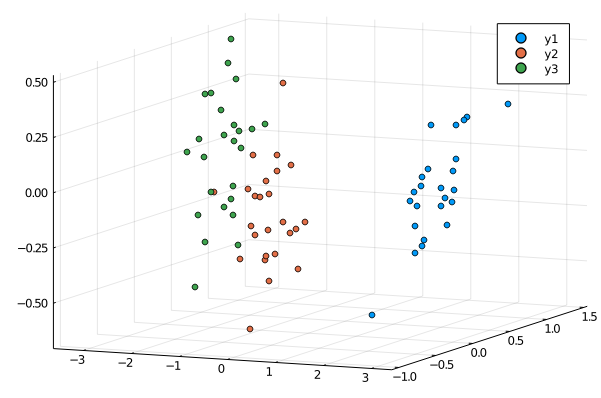
SVM
xxxxxxxxxx61using LIBSVM2iris = dataset("datasets", "iris")3features = convert(Array, iris[:,1:4])4labels = convert(Array, iris[:,5])5features_train, features_test = features[1:2:end,:], features[2:2:end,:]6labels_train, labels_test = labels[1:2:end], labels[2:2:end]xxxxxxxxxx71model = svmtrain(features_train', labels_train)2#进行预测3(predicted_labels, decision_values) = svmpredict(model, features_test')4#统计准确率5using Statistics6mean(predicted_labels.==labels_test)*1.07>> 0.9333333333333333线性回归
xxxxxxxxxx141using GLM, GLMNet, DataFrames2data = DataFrame(X=[1,2,3],Y=[2,4,7]);3ols = lm((Y~X),data)4>> StatsModels.TableRegressionModel{LinearModel{GLM.LmResp{Array{Float64,1}},GLM.DensePredChol{Float64,LinearAlgebra.Cholesky{Float64,Array{Float64,2}}}},Array{Float64,2}}56Y ~ 1 + X78Coefficients:9─────────────────────────────────────────────────────────────────────────10 Coef. Std. Error t Pr(>|t|) Lower 95% Upper 95%11─────────────────────────────────────────────────────────────────────────12(Intercept) -0.666667 0.62361 -1.07 0.4788 -8.59038 7.2570413X 2.5 0.288675 8.66 0.0732 -1.16797 6.1679714─────────────────────────────────────────────────────────────────────────标准差
xxxxxxxxxx41stderror(ols)2>> 2-element Array{Float64,1}:3 0.62360956446232454 0.2886751345948133应用模型
xxxxxxxxxx61newX = DataFrame(X = [2,3,4]);2GLM.predict(ols, newX)33-element Array{Union{Missing, Float64},1}:4 4.3333333333333325 6.8333333333333356 9.33333333333334glm模型
xxxxxxxxxx161data = DataFrame(X=[0,1,2,3,4], Y=[0.1296, 0.0864, 0.0576, 0.0384, 0.0256])2probit = glm((Y~X), data, Binomial(), ProbitLink())3>>4StatsModels.TableRegressionModel{GeneralizedLinearModel{GLM.GlmResp{Array{Float64,1},Binomial{Float64},ProbitLink},GLM.DensePredChol{Float64,LinearAlgebra.Cholesky{Float64,Array{Float64,2}}}},Array{Float64,2}}56Y ~ 1 + X78Coefficients:9─────────────────────────────────────────────────────────────────────────10 Coef. Std. Error z Pr(>|z|) Lower 95% Upper 95%11─────────────────────────────────────────────────────────────────────────12(Intercept) -1.14184 1.32729 -0.86 0.3896 -3.74329 1.4596113X -0.208282 0.659277 -0.32 0.7521 -1.50044 1.0838814─────────────────────────────────────────────────────────────────────────1516xxxxxxxxxx61GLM.predict(probit, newX)24-element Array{Union{Missing, Float64},1}: 3 0.08848881841365534 4 0.05956903371757441 5 0.038640604730983866 6 0.024136013530037453 线性回归模型处理iris数据集
xxxxxxxxxx31data = DataFrame();2data[:x] = iris[1:50, :SepalWidth]3data[:y] = iris[1:50, :SepalLength]xxxxxxxxxx121model = lm((y~x), data)2StatsModels.TableRegressionModel{LinearModel{GLM.LmResp{Array{Float64,1}},GLM.DensePredChol{Float64,LinearAlgebra.Cholesky{Float64,Array{Float64,2}}}},Array{Float64,2}}34y ~ 1 + x56Coefficients:7──────────────────────────────────────────────────────────────────────8 Coef. Std. Error t Pr(>|t|) Lower 95% Upper 95%9──────────────────────────────────────────────────────────────────────10(Intercept) 2.639 0.310014 8.51 <1e-10 2.01568 3.2623311x 0.69049 0.0898989 7.68 <1e-9 0.509736 0.87124412──────────────────────────────────────────────────────────────────────将拟合的结果与原数据做对比
xxxxxxxxxx21plot(GLM.predict(model))2plot!(data[:y])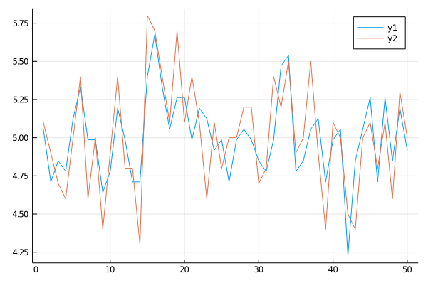
用GLM模型处理iris数据集
xxxxxxxxxx121model = glm((y~x), data, Normal(), IdentityLink())2>> StatsModels.TableRegressionModel{GeneralizedLinearModel{GLM.GlmResp{Array{Float64,1},Normal{Float64},IdentityLink},GLM.DensePredChol{Float64,LinearAlgebra.Cholesky{Float64,Array{Float64,2}}}},Array{Float64,2}}34y ~ 1 + x56Coefficients:7──────────────────────────────────────────────────────────────────────8 Coef. Std. Error z Pr(>|z|) Lower 95% Upper 95%9──────────────────────────────────────────────────────────────────────10(Intercept) 2.639 0.310014 8.51 <1e-16 2.03138 3.2466211x 0.69049 0.0898989 7.68 <1e-13 0.514291 0.86668812──────────────────────────────────────────────────────────────────────K-means
xxxxxxxxxx51using Clustering2using RDatasets3iris = dataset("datasets", "iris")4features = convert(Array, iris[:,1:4])5labels = convert(Array, iris[:,5])xxxxxxxxxx61#随机选择三个点作为分类起始点2initseeds(:rand, convert(Matrix, features'),3)3>> 3-element Array{Int64,1}: 4 39 5 122 6 22 xxxxxxxxxx21# 建立模型 2result = kmeans(features, 3)xxxxxxxxxx31# 绘制分类后的模型2using Gadfly3Gadfly.plot(iris, x = "PetalLength", y = "PetalWidth", color=result.assignments,Geom.point)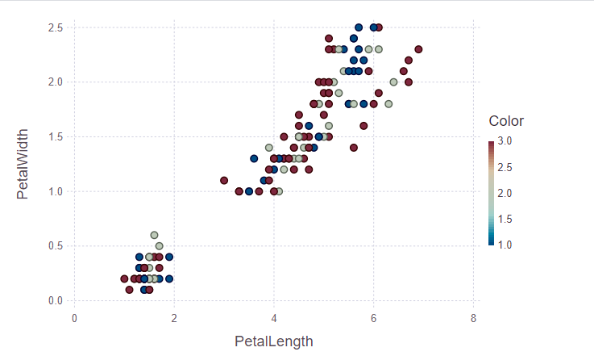
如何写出高性能的Julia代码
避免全局变量
全局变量的值和类型随时都会发生改变。这使编译器难以优化使用全局变量的代码。变量应该是局部的，或者尽可能作为参数传递给函数。
任何注重性能或者需要测试性能的代码都应该被放置在函数之中。
把全局变量声明为常量可以巨大地提升性能。
xxxxxxxxxx11const VAL = 0如果必须要声明全局变量，可以在使用它的地方标注他们的类型来优化效率。
xxxxxxxxxx81global x = rand(10000)23function lpl()4 s = 0.05 for i in x6 s+=i7 end8end使用@time来估算代码运行的时间
xxxxxxxxxx31 lpl()2>> 0.001313 seconds (39.49 k allocations: 773.281 KiB)3# 发现占用了较大的内存空间，说明代码需要优化xxxxxxxxxx61function lp2()2 a = 0.03 for i in x::Vector{Float64}4 a += i5 end6endxxxxxxxxxx21 lp2()2>> 0.000006 secondsxxxxxxxxxx61function lp3(x)2 s = 0.03 for i in x4 s+=i5 end6endxxxxxxxxxx21 lp3(x)2>> 0.000005 seconds在全局内运行宏也会占用一定的存储空间和时间，为了节省时间，可以将宏定义为函数。
xxxxxxxxxx41time_sum(x) = lp3(x)2>> time_sum (generic function with 1 method)3time_sum(x)4>> 0.000000 seconds对于更加正式的性能测试，可以使用BenchmarkTools包，这个包会多次评估函数的性能以降低噪声。
xxxxxxxxxx41using BenchmarkTools2 lpl()3 lp2()4 lp3(x)code generation
在REPL中，我们输入@code来查看用于code generation的宏
@code_lowered:Julia底层的运行过程@code_typed:程序运行时type的变化@code_llvm:llvm编译器运行过程@code_native:生成程序运行的机器语言@code_warntypes:查看程序运行时是否由类型上的warning
首先我们定义一个简单的函数
xxxxxxxxxx81cal(a, b, c) = a + b + c2>> cal (generic function with 1 method)3cal(1,2,3)4>> 65cal(1.0, 2.0, 3.0)6>> 6.07cal(1.0, 2.0, 3)8>> 6.0用@code_lowered查看底层运行过程
xxxxxxxxxx171julia> cal(1,2,3) 2CodeInfo( 31 ─ %1 = a + b + c 4└── return %1 5) 6 7julia> cal(1.0,2.0,3.0) 8CodeInfo( 91 ─ %1 = a + b + c 10└── return %1 11) 12 13julia> cal(1.0,2.0,3) 14CodeInfo( 151 ─ %1 = a + b + c 16└── return %1 17) xxxxxxxxxx211julia> cal(1,2,3) 2CodeInfo( 31 ─ %1 = Base.add_int(a, b)::Int64 4│ %2 = Base.add_int(%1, c)::Int64 5└── return %2 6) => Int64 7 8julia> cal(1.0,2.0,3.0) 9CodeInfo( 101 ─ %1 = Base.add_float(a, b)::Float64 11│ %2 = Base.add_float(%1, c)::Float64 12└── return %2 13) => Float64 14 15julia> cal(1,2,3.0) 16CodeInfo( 171 ─ %1 = Base.add_int(a, b)::Int64 18│ %2 = Base.sitofp(Float64, %1)::Float6419│ %3 = Base.add_float(%2, c)::Float64 20└── return %3 21) => Float64 xxxxxxxxxx471julia> cal(1,2,3) 2 3; @ REPL[79]:1 within `cal' 4; Function Attrs: uwtable 5define i64 @julia_cal_22890(i64, i64, i64) #0 { 6top: 7; ┌ @ operators.jl:529 within `+' @ int.jl:53 8 %3 = add i64 %1, %0 9 %4 = add i64 %3, %2 10; └ 11 ret i64 %4 12} 13 14julia> @code_llvm cal(1.0,2.0,3.0) 15 16; @ REPL[79]:1 within `cal' 17; Function Attrs: uwtable 18define double (double, double, double) #0 { 19top: 20; ┌ @ operators.jl:529 within `+' @ float.jl:401 21 %3 = fadd double %0, %1 22 %4 = fadd double %3, %2 23; └ 24 ret double %4 25} 26 27julia> @code_llvm cal(1,2,3.0) 28 29; @ REPL[79]:1 within `cal' 30; Function Attrs: uwtable 31define double (i64, i64, double) #0 { 32top: 33; ┌ @ operators.jl:529 within `+' @ int.jl:53 34 %3 = add i64 %1, %0 35; │ @ operators.jl:529 within `+' @ promotion.jl:311 36; │┌ @ promotion.jl:282 within `promote' 37; ││┌ @ promotion.jl:259 within `_promote' 38; │││┌ @ number.jl:7 within `convert' 39; ││││┌ @ float.jl:60 within `Float64' 40 %4 = sitofp i64 %3 to double 41; │└└└└ 42; │ @ operators.jl:529 within `+' @ promotion.jl:311 @ float.jl:401 43 %5 = fadd double %4, %2 44; └ 45 ret double %5 46} 47 xxxxxxxxxx501julia> cal(1,2,3)2 .text3; ┌ @ REPL[79]:1 within `cal'4 pushq %rbp5 movq %rsp, %rbp6; │┌ @ operators.jl:529 within `+' @ int.jl:537 leaq (%rcx,%rdx), %rax8 addq %r8, %rax9; │└10 popq %rbp11 retq12 nopl (%rax)13; └1415julia> @code_native cal(1.0,2.0,3.0)16 .text17; ┌ @ REPL[79]:1 within `cal'18 pushq %rbp19 movq %rsp, %rbp20; │┌ @ operators.jl:529 within `+' @ float.jl:40121 vaddsd %xmm1, %xmm0, %xmm022 vaddsd %xmm2, %xmm0, %xmm023; │└24 popq %rbp25 retq26 nop27; └2829julia> @code_native cal(1,2,3.0)30 .text31; ┌ @ REPL[79]:1 within `cal'32 pushq %rbp33 movq %rsp, %rbp34; │┌ @ operators.jl:529 within `+' @ int.jl:5335 addq %rdx, %rcx36; ││ @ operators.jl:529 within `+' @ promotion.jl:31137; ││┌ @ promotion.jl:282 within `promote'38; │││┌ @ promotion.jl:259 within `_promote'39; ││││┌ @ number.jl:7 within `convert'40; │││││┌ @ float.jl:60 within `Float64'41 vcvtsi2sdq %rcx, %xmm0, %xmm042; ││└└└└43; ││ @ operators.jl:529 within `+' @ promotion.jl:311 @ float.jl:40144 vaddsd %xmm2, %xmm0, %xmm045; │└46 popq %rbp47 retq48 nopw %cs:(%rax,%rax)49 nopl (%rax)50; └抽象和具体类型
当我们定义一个函数时，如果函数的参数的类型是固定的，比如是一个int64的Array[1,2,3,4]，那么他们在内存中会连续存放：
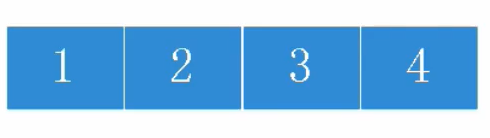
但是如果函数的参数类型是Any，那么内存中连续存放的只是他们的“指针”，会指向其实际的位置。这样一来，数据存储就慢下来了。
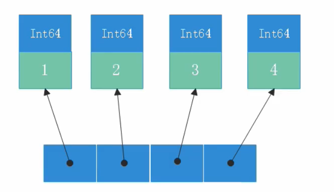
来看下面的例子：
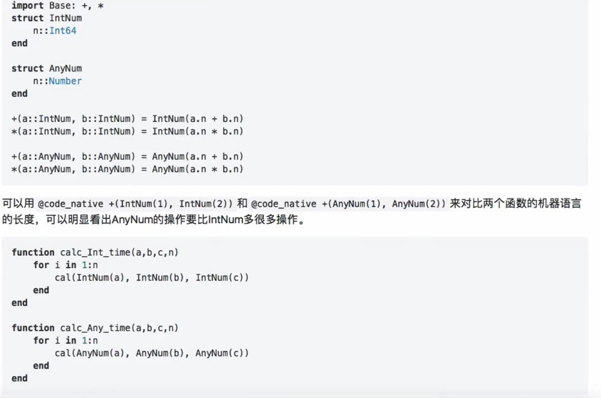
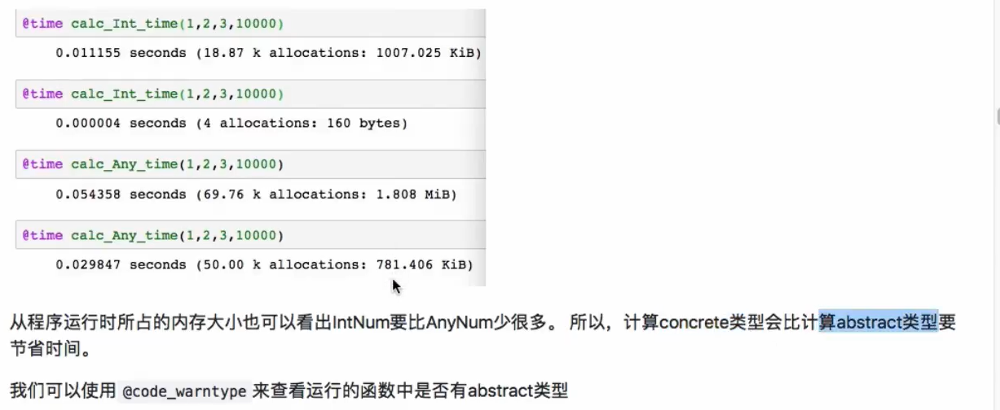
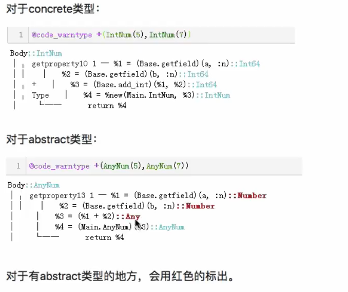
隐藏的类型转换
在C++中，对每个定义的变量都有其固定的类型，但Julia中由于变量的定义过程中可以缺省参数，经常会注意不到参数类型的转换。
我们在定义变量时，要尽量保持与后面运算时的类型保持一致。有几个函数可以帮助我们完成这种定义。
zero(value)eltype(array)one(value)similar(value)
xxxxxxxxxx11pos(x) = x < 0 ? zero(x) : x #当x小于时返回与x类型相一致的0避免拥有抽象类型参数的容器
在定义struct时，我们经常会这样写
xxxxxxxxxx31mutable struct MyType12 x::AbstractFloat3end但用下面的写法更好
xxxxxxxxxx31mutable struct MyType2{T<:AbstractFloat}2 x::T3end查看他们的类型：
xxxxxxxxxx111julia> a = MyType1(2.3)2MyType1(2.3) 3 4julia> typeof(a) 5MyType1 6 7julia> b = MyType2(2.3)8MyType2{Float64}(2.3) 9 10julia> typeof(b) 11MyType2{Float64} x的类型可以由b的类型决定，但不能由a的类型决定。b.x的类型不会改变，永远都是Float64，而a.x的类型则会改变。
xxxxxxxxxx51julia> typeof(a.x) 2Float64 3 4julia> typeof(b.x) 5Float64 xxxxxxxxxx111julia> a.x = 2.3f0 22.3f0 3 4julia> typeof(a.x) 5Float32 6 7julia> b.x = 2.3f0 82.3f0 9 10julia> typeof(b.x) 11Float64 当某个包含多个变量的Array中，如果我们知道某个变量的类型，就明确指出来。
xxxxxxxxxx51function foo(a::Array{Any, 1})2 x = a[1]::Int323 b = x + 14 ...5end如果只能确定x的类型，但a[1]的类型不能确定，可以用convert()来完成。
xxxxxxxxxx11x = convert(Int32, a[1])::Int32从上面我们讲的这些内容也可以知道优化代码的一个策路：程序越简单越好，让编译器明确知道自己想干什么，而不是让编译器去猜我们的目的。
因此可以推断出有可变参数类型的函数肯定不如固定关键字参数类型的函数运行的快。
但这种指定某个变量类型在使用时要注息一点，就是如果变量类型不是在编译时确定而是在运行时才确定，那会有损性能。
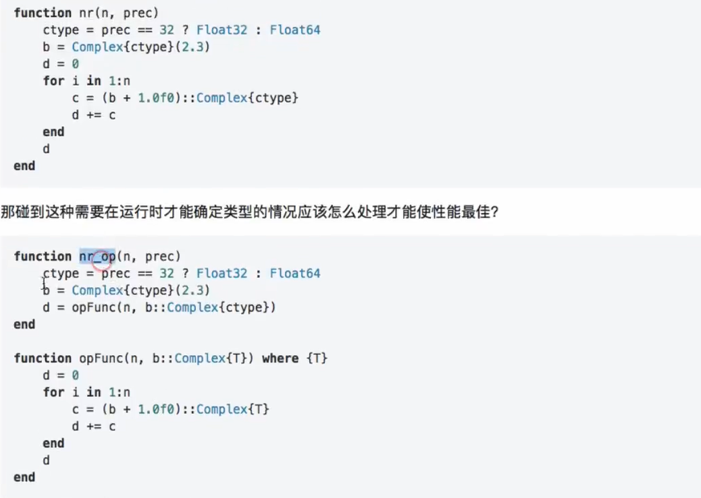
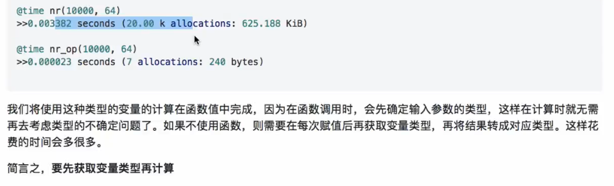
参数类型优化 方法的妙用
当我们的类型是函数参数时，也要用上面的方式先获取
xxxxxxxxxx51#定义一个N维矩阵2function array3(fillval, N)3 fill(fillval, ntuple(d->3, N))4end5# ntuple(d->3, 4) (3, 3, 3, 3)xxxxxxxxxx491array3(2.0, 4)23×3×3×3 Array{Float643[:, :, 1, 1] = 4 2.0 2.0 2.0 5 2.0 2.0 2.0 6 2.0 2.0 2.0 7 8[:, :, 2, 1] = 9 2.0 2.0 2.0 10 2.0 2.0 2.0 11 2.0 2.0 2.0 12 13[:, :, 3, 1] = 14 2.0 2.0 2.0 15 2.0 2.0 2.0 16 2.0 2.0 2.0 17 18[:, :, 1, 2] = 19 2.0 2.0 2.0 20 2.0 2.0 2.0 21 2.0 2.0 2.0 22 23[:, :, 2, 2] = 24 2.0 2.0 2.0 25 2.0 2.0 2.0 26 2.0 2.0 2.0 27 28[:, :, 3, 2] = 29 2.0 2.0 2.0 30 2.0 2.0 2.0 31 2.0 2.0 2.0 32 33[:, :, 1, 3] = 34 2.0 2.0 2.0 35 2.0 2.0 2.0 36 2.0 2.0 2.0 37 38[:, :, 2, 3] = 39 2.0 2.0 2.0 40 2.0 2.0 2.0 41 2.0 2.0 2.0 42 43[:, :, 3, 3] = 44 2.0 2.0 2.0 45 2.0 2.0 2.0 46 2.0 2.0 2.0 4748typeof(array3(2.0, 4))49>> Array{Float64,4}这里的N是矩阵的类型参数，该矩阵是一个N维的。同样存在的问题，该矩阵变量的类型参数就是N的值，如果我们先获取了N的值后再进行矩阵生成，性能会更好。
xxxxxxxxxx31function array3(fillval, ::Val{N}) where N2 fill(fillval, ntupled(d->3, Val(N)))3end在使用Val()时，一定要注意使用方式，如果使用不当，则比不使用Val()性能更差。
xxxxxxxxxx31function call_array3(fillval, n)2 A = array3(fillval, Val(n))3end这样编译器就不知道n是个什么东西，也不知道n的类型，跟我们的初衷南辕北辙。
我们再举个可变参数和关键字参数的例子说明两者运行的时间差异。
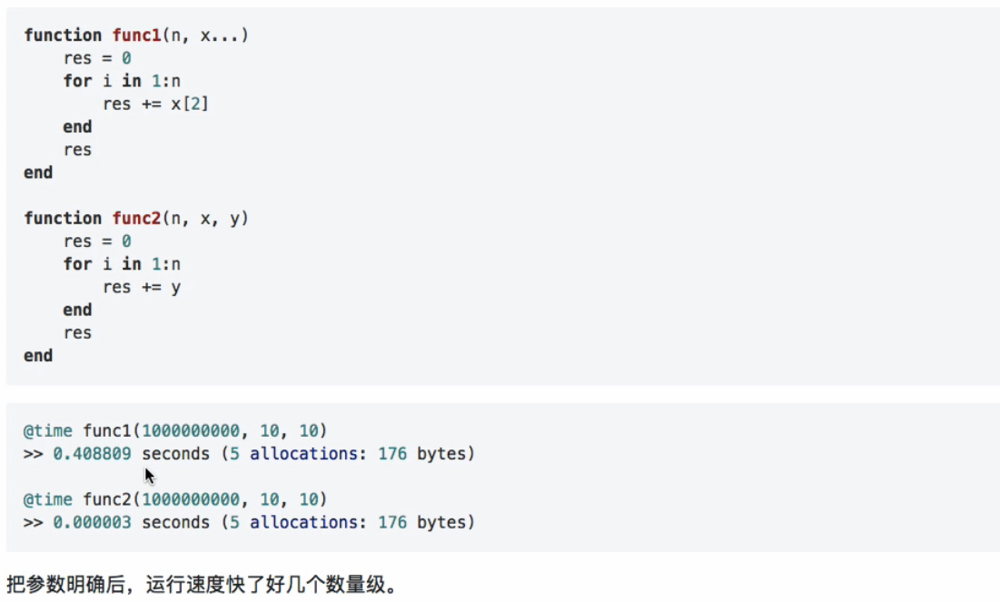
用方法代替函数中的条件判断
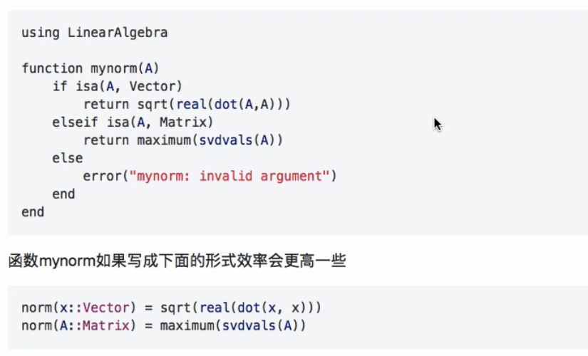
矩阵优化
在Julia中，多维矩阵是以列优先原则排列的，这跟Matlab中是一致的。
xxxxxxxxxx121julia> x = [1 2;3 4] 22×2 Array{Int64,2}: 3 1 2 4 3 4 5 6julia> x[:] 74-element Array{Int64,1}: 8 1 9 3 10 2 11 4 12也就是说，Julia中矩阵的每一列的数据在内存中是连续的，每一行是不连续的，操作连续地址比非连续地址要快得多。
xxxxxxxxxx491# 按列拷贝2function copy_cols(x::Vector{T}) where T3 inds = axes(x, 1)4 out = similar(Array{T}, inds, inds)5 for i = inds6 out[:, i] = x7 end8 return out9end1011# 按行拷贝12function copy_rows(x::Vector{T}) where T13 inds = axes(x, 1)14 out = similar(Array{T}, inds, inds)15 for i = inds16 out[i, :] = x17 end18 return out19end2021# 按元素拷贝，以列为顺序22function copy_col_row(x::Vector{T}) where T23 inds = axes(x, 1)24 out = similar(Array{T}, inds, inds)25 for col = inds, row = inds26 out[row, col] = x[row]27 end28 return out29end3031# 按元素拷贝，以行为顺序32function copy_row_col(x::Vector{T}) where T33 inds = axes(x, 1)34 out = similar(Array{T}, inds, inds)35 for row = inds, col = inds36 out[row, col] = x[col]37 end38 return out39end4041x = randn(10000)42fmt(f) = println(rpad(string(f)*":", 14, ' '), f(x))43map(fmt, Any[copy_cols, copy_rows, copy_col_row, copy_row_col])4445>>46copy_cols: 0.41863070147copy_rows: 1.31616149948copy_col_row: 0.45887970149copy_row_col: 1.1687943dot运算
在矩阵操作中，操作符前面加上.，看下面的例子
xxxxxxxxxx41f(x) = 5x.^3 - 2x.^2 + 3x2>> f (generic function with 1 method)3fdot(x) = @. 5x^3 - 2x^2 + 3x4>> fdot (generic function with 1 method)xxxxxxxxxx71x = rand(10^6);2 f(x)3>> 0.452430 seconds (383.01 k allocations: 73.068 MiB, 3.77% gc time)4 fdot(x)5>> 0.307250 seconds (829.29 k allocations: 47.215 MiB)6 f.(x) #同fdot(x)7>> 0.003293 seconds (4 allocations: 7.630 MiB)可以看出，点乘操作要快很多
向量化并不会提高Julia的运行速度
很多用过Matlab和Python的同学都觉得向量操作肯定要比循环快很多，但在Julia中没有这个规则
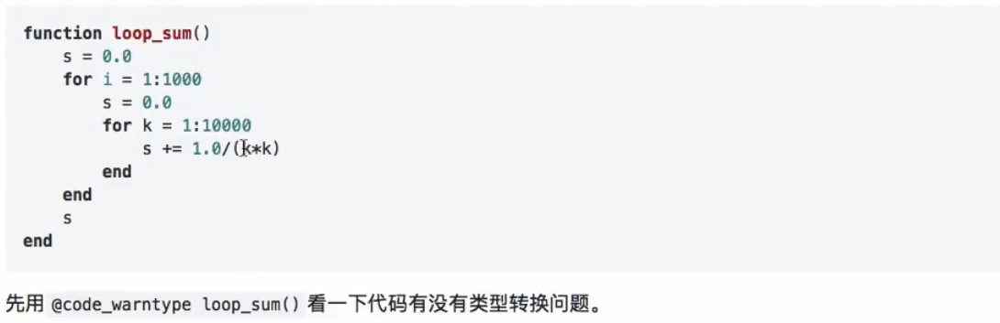
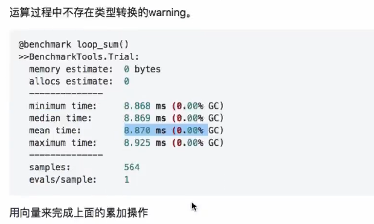
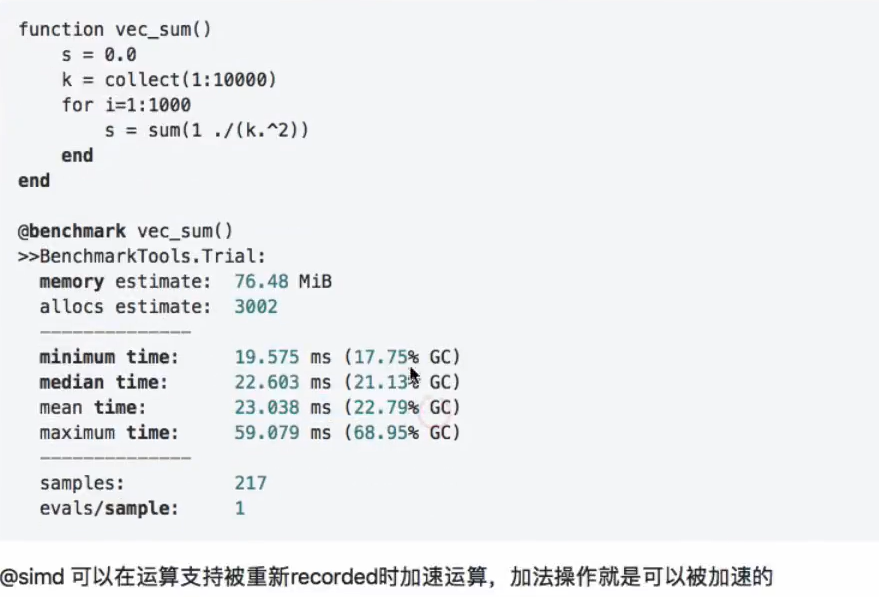
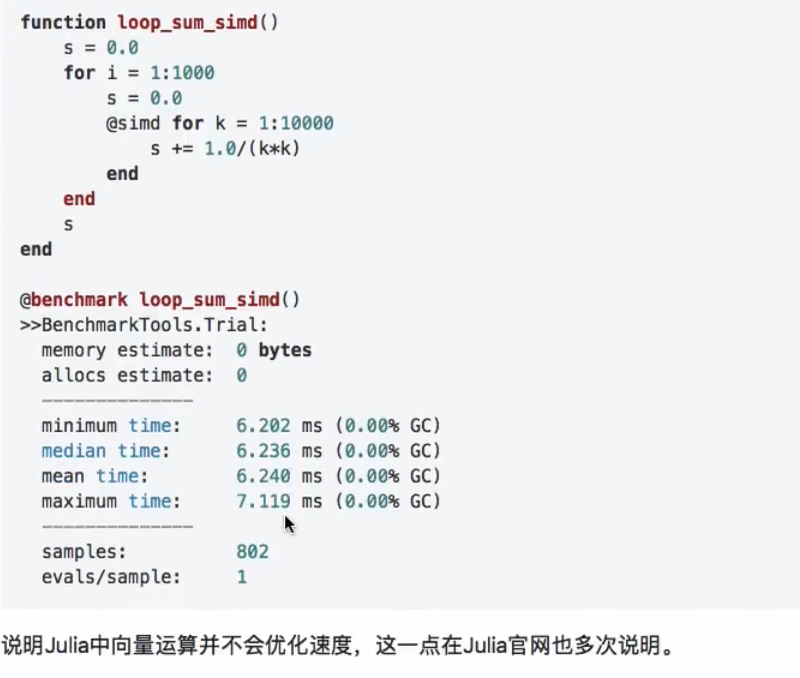
输出预分配
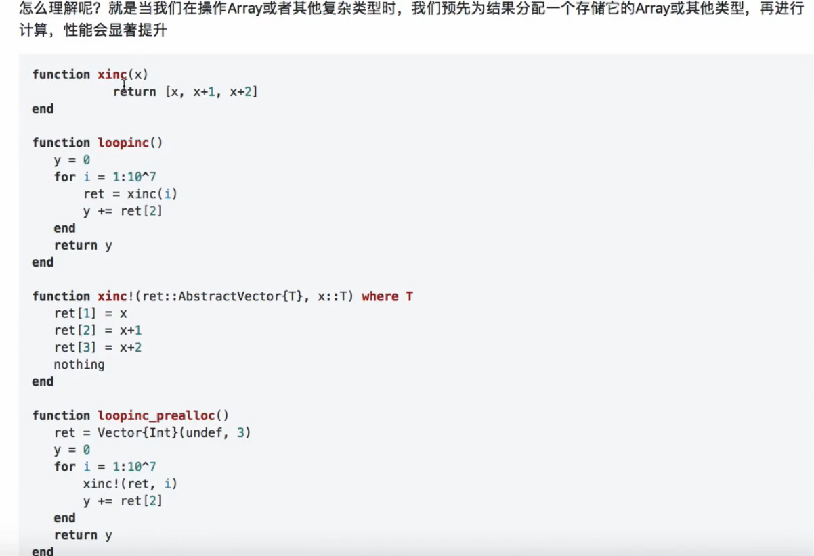
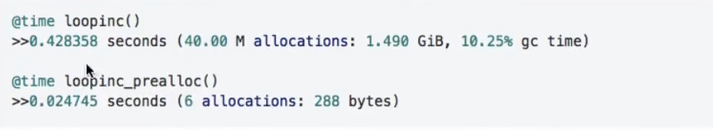
copy和view
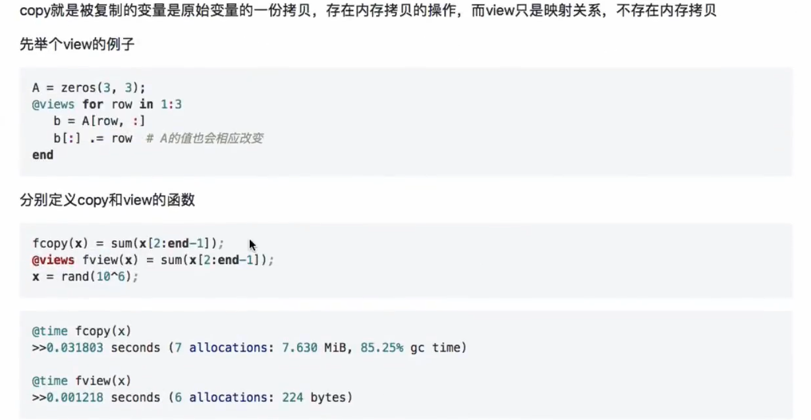
IO操作优化
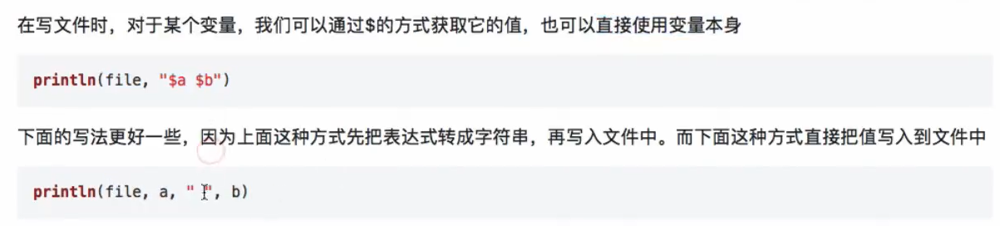
其他优化小技巧
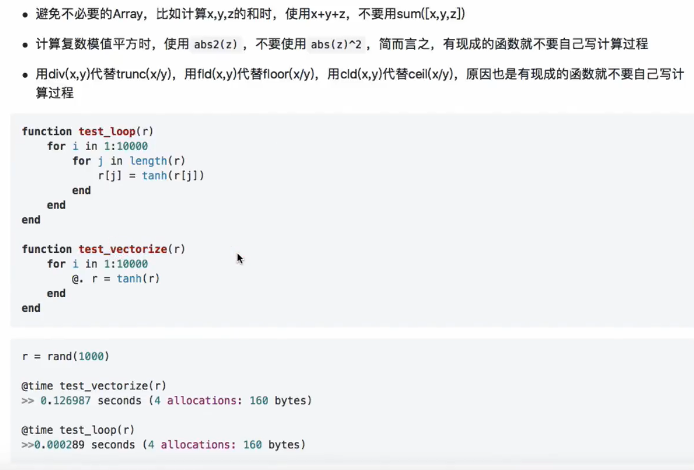